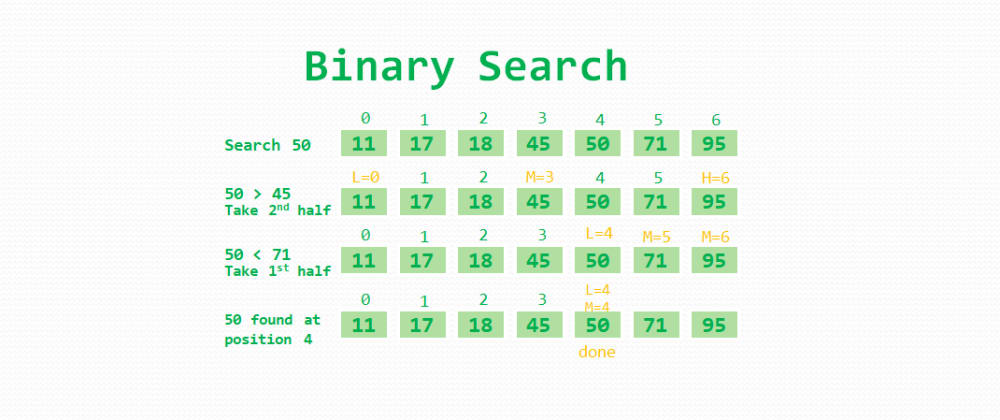
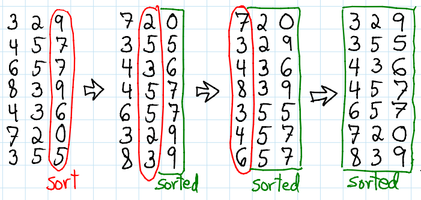
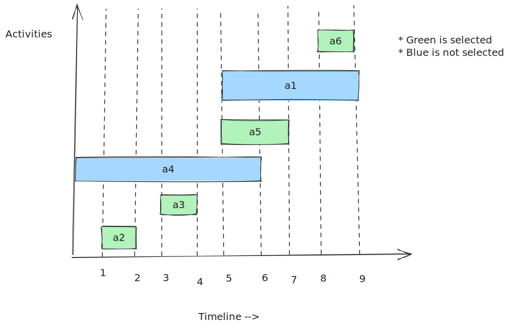

Algorithms
Table of Contents
- 1. Data structure and Algorithm
- 2. Characteristics of Algorithms
- 3. Behaviour of algorithm
- 4. Asymptotic Notations
- 5. Comparing Growth rate of funtions
- 6. Properties of Asymptotic Notations
- 7. Calculating time complexity of algorithm
- 8. Time complexity of recursive instructions
- 9. Solving Recursive time complexities
- 10. Square root recurrence relations
- 11. Extended Master's theorem for time complexity of recursive algorithms
- 12. Tree method for time complexity of recursive algorithms
- 13. Space complexity
- 14. Calculating auxiliary space complexity
- 15. Divide and Conquer algorithms
- 16. Searching for element in array
- 17. Max and Min element from array
- 18. Square matrix multiplication
- 19. Sorting algorithms
- 20. Bubble sort
- 21. Selection sort
- 22. Insertion sort
- 23. Inversion in array
- 24. Quick sort
- 25. Merging two sorted arrays (2-Way Merge)
- 26. Merging k sorted arrays (k-way merge)
- 27. Merge sort
- 28. Stable and unstable sorting algorithms
- 29. Non-comparitive sorting algorithms
- 30. Dynamic Programming
- 30.1. Use and steps of dynamic programming
- 30.2. Rod cutting (Simple example for dynamic programming)
- 30.3. Subproblem graph
- 30.4. Matrix-chain multiplication
- 30.5. Longest common subsequence
- 30.6. 0/1 knapsack problem
- 30.7. Floyd-Warshall algorithm
- 31. Greedy algorithm
- 32. Backtracking
- 33. Branch and Bound
1. Data structure and Algorithm
- A data structure is a particular way of storing and organizing data. The purpose is to effectively access and modify data effictively.
- A procedure to solve a specific problem is called Algorithm.
During programming we use data structures and algorithms that work on that data.
2. Characteristics of Algorithms
An algorithm has follwing characteristics.
- Input : Zero or more quantities are externally supplied to algorithm.
- Output : An algorithm should produce atleast one output.
- Finiteness : The algorithm should terminate after a finite number of steps. It should not run infinitely.
- Definiteness : Algorithm should be clear and unambiguous. All instructions of an algorithm must have a single meaning.
- Effectiveness : Algorithm must be made using very basic and simple operations that a computer can do.
- Language Independance : A algorithm is language independent and can be implemented in any programming language.
3. Behaviour of algorithm
The behaviour of an algorithm is the analysis of the algorithm on basis of Time and Space.
- Time complexity : Amount of time required to run the algorithm.
- Space complexity : Amount of space (memory) required to execute the algorithm.
The behaviour of algorithm can be used to compare two algorithms which solve the same problem.
The preference is traditionally/usually given to better time complexity. But we may need to give preference to better space complexity based on needs.
3.1. Best, Worst and Average Cases
The input size tells us the size of the input given to algorithm. Based on the size of input, the time/storage usage of the algorithm changes. Example, an array with larger input size (more elements) will taken more time to sort.
- Best Case : The lowest time/storage usage for the given input size.
- Worst Case : The highest time/storage usage for the given input size.
- Average Case : The average time/storage usage for the given input size.
3.2. Bounds of algorithm
Since algorithms are finite, they have bounded time taken and bounded space taken. Bounded is short for boundries, so they have a minimum and maximum time/space taken. These bounds are upper bound and lower bound.
- Upper Bound : The maximum amount of space/time taken by the algorithm is the upper bound. It is shown as a function of worst cases of time/storage usage over all the possible input sizes.
- Lower Bound : The minimum amount of space/time taken by the algorithm is the lower bound. It is shown as a function of best cases of time/storage usage over all the possible input sizes.
4. Asymptotic Notations
4.1. Big-Oh Notation [O]
- The Big Oh notation is used to define the upper bound of an algorithm.
- Given a non negative funtion f(n) and other non negative funtion g(n), we say that \(f(n) = O(g(n)\) if there exists a positive number \(n_0\) and a positive constant \(c\), such that \[ f(n) \le c.g(n) \ \ \forall n \ge n_0 \]
- So if growth rate of g(n) is greater than or equal to growth rate of f(n), then \(f(n) = O(g(n))\).
4.2. Omega Notation [ \(\Omega\) ]
- It is used to shown the lower bound of the algorithm.
- For any positive integer \(n_0\) and a positive constant \(c\), we say that, \(f(n) = \Omega (g(n))\) if \[ f(n) \ge c.g(n) \ \ \forall n \ge n_0 \]
- So growth rate of \(g(n)\) should be less than or equal to growth rate of \(f(n)\)
Note : If \(f(n) = O(g(n))\) then \(g(n) = \Omega (f(n))\)
4.3. Theta Notation [ \(\theta\) ]
- If is used to provide the asymptotic equal bound.
- \(f(n) = \theta (g(n))\) if there exists a positive integer \(n_0\) and a positive constants \(c_1\) and \(c_2\) such that \[ c_1 . g(n) \le f(n) \le c_2 . g(n) \ \ \forall n \ge n_0 \]
- So the growth rate of \(f(n)\) and \(g(n)\) should be equal.
Note : So if \(f(n) = O(g(n))\) and \(f(n) = \Omega (g(n))\), then \(f(n) = \theta (g(n))\)
4.4. Little-Oh Notation [o]
- The little o notation defines the strict upper bound of an algorithm.
- We say that \(f(n) = o(g(n))\) if there exists positive integer \(n_0\) and positive constant \(c\) such that, \[ f(n) < c.g(n) \ \ \forall n \ge n_0 \]
- Notice how condition is <, rather than \(\le\) which is used in Big-Oh. So growth rate of \(g(n)\) is strictly greater than that of \(f(n)\).
4.5. Little-Omega Notation [ \(\omega\) ]
- The little omega notation defines the strict lower bound of an algorithm.
- We say that \(f(n) = \omega (g(n))\) if there exists positive integer \(n_0\) and positive constant \(c\) such that, \[ f(n) > c.g(n) \ \ \forall n \ge n_0 \]
- Notice how condition is >, rather than \(\ge\) which is used in Big-Omega. So growth rate of \(g(n)\) is strictly less than that of \(f(n)\).
5. Comparing Growth rate of funtions
5.1. Applying limit
To compare two funtions \(f(n)\) and \(g(n)\). We can use limit \[ \lim_{n\to\infty} \frac{f(n)}{g(n)} \]
- If result is 0 then growth of \(g(n)\) > growth of \(f(n)\)
- If result is \(\infty\) then growth of \(g(n)\) < growth of \(f(n)\)
- If result is any finite number (constant), then growth of \(g(n)\) = growth of \(f(n)\)
Note : L'Hôpital's rule can be used in this limit.
5.2. Using logarithm
Using logarithm can be useful to compare exponential functions. When comaparing functions \(f(n)\) and \(g(n)\),
- If growth of \(\log(f(n))\) is greater than growth of \(\log(g(n))\), then growth of \(f(n)\) is greater than growth of \(g(n)\)
- If growth of \(\log(f(n))\) is less than growth of \(\log(g(n))\), then growth of \(f(n)\) is less than growth of \(g(n)\)
- When using log for comparing growth, comaparing constants after applying log is also required. For example, if functions are \(2^n\) and \(3^n\), then their logs are \(n.log(2)\) and \(n.log(3)\). Since \(log(2) < log(3)\), the growth rate of \(3^n\) will be higher.
- On equal growth after applying log, we can't decide which function grows faster.
5.3. Common funtions
Commonly, growth rate in increasing order is \[ c < c.log(log(n)) < c.log(n) < c.n < n.log(n) < c.n^2 < c.n^3 < c.n^4 ... \] \[ n^c < c^n < n! < n^n \] Where \(c\) is any constant.
6. Properties of Asymptotic Notations
6.1. Big-Oh
- Product : \[ Given\ f_1 = O(g_1)\ \ and\ f_2 = O(g_2) \implies f_1 f_2 = O(g_1 g_2) \] \[ Also\ f.O(g) = O(f g) \]
- Sum : For a sum of two functions, the big-oh can be represented with only with funcion having higer growth rate. \[ O(f_1 + f_2 + ... + f_i) = O(max\ growth\ rate(f_1, f_2, .... , f_i )) \]
- Constants : For a constant \(c\) \[ O(c.g(n)) = O(g(n)) \], this is because the constants don't effect the growth rate.
6.2. Properties
- Reflexive : \(f(n) = O(f(n)\) and \(f(n) = \Omega (f(n))\) and \(f(n) = \theta (f(n))\)
- Symmetric : If \(f(n) = \theta (g(n))\) then \(g(n) = \theta (f(n))\)
- Transitive : If \(f(n) = O(g(n))\) and \(g(n) = O(h(n))\) then \(f(n) = O(h(n))\)
- Transpose : If \(f(n) = O(g(n))\) then we can also conclude that \(g(n) = \Omega (f(n))\) so we say Big-Oh is transpose of Big-Omega and vice-versa.
- Antisymmetric : If \(f(n) = O(g(n))\) and \(g(n) = O(f(n))\) then we conclude that \(f(n) = g(n)\)
- Asymmetric : If \(f(n) = \omega (g(n))\) then we can conclude that \(g(n) \ne \omega (f(n))\)
7. Calculating time complexity of algorithm
We will look at three types of situations
- Sequential instructions
- Iterative instructions
- Recursive instructions
7.1. Sequential instructions
A sequential set of instructions are instructions in a sequence without iterations and recursions. It is a simple block of instructions with no branches. A sequential set of instructions has time complexity of O(1), i.e., it has constant time complexity.
7.2. Iterative instructions
A set of instructions in a loop. Iterative instructions can have different complexities based on how many iterations occurs depending on input size.
- For fixed number of iterations (number of iterations known at compile time i.e. independant of the input size), the time complexity is constant, O(1). Example for(int i = 0; i < 100; i++) { … } will always have 100 iterations, so constant time complexity.
- For n number of iterations ( n is the input size ), the time complexity is O(n). Example, a loop for(int i = 0; i < n; i++){ … } will have n iterations where n is the input size, so complexity is O(n). Loop for(int i = 0; i < n/2; i++){…} also has time complexity O(n) because n/2 iterations are done by loop and 1/2 is constant thus not in big-oh notation.
- For a loop like for(int i = 1; i <= n; i = i*2){…} the value of i is update as *=2, so the number of iterations will be \(log_2 (n)\). Therefore, the time complexity is \(O(log_2 (n))\).
- For a loop like for(int i = n; i > 1; i = i/2){…} the value of i is update as *=2, so the number of iterations will be \(log_2 (n)\). Therefore, the time complexity is \(O(log_2 (n))\).
Nested Loops
- If inner loop iterator doesn't depend on outer loop, the complexity of the inner loop is multiplied by the number of times outer loop runs to get the time complexity For example, suppose we have loop as
for(int i = 0; i < n; i++){ ... for(int j = 0; j < n; j *= 2){ ... } ... }
Here, the outer loop will n times and the inner loop will run log(n) times. Therefore, the total number of time statements in the inner loop run is n.log(n) times. Thus the time complexity is O(n.log(n)).
- If inner loop and outer loop are related, then complexities have to be computed using sums. Example, we have loop
for(int i = 0; i <= n; i++){ ... for(int j = 0; j <= i; j++){ ... } ... }
Here the outer loop will run n times, so i goes from 0 to n. The number of times inner loop runs is j, which depends on i.
| Value of i | Number of times inner loop runs |
|---|---|
| 0 | 0 |
| 1 | 1 |
| 2 | 2 |
| . | . |
| . | . |
| . | . |
| n | n |
So the total number of times inner loop runs = \(1+2+3+....+n\)
total number of times inner loop runs = \(\frac{n.(n+1)}{2}\)
total number of times inner loop runs = \(\frac{n^2}{2} + \frac{n}{2}\)
Therefore, time complexity is \(O(\frac{n^2}{2} + \frac{n}{2}) = O(n^2)\)
Another example,
Suppose we have loop
for(int i = 1; i <= n; i++){ ... for(int j = 1; j <= i; j *= 2){ ... } ... }
The outer loop will run n times with i from 1 to n, and inner will run log(i) times.
| Value of i | Number of times inner loop runs |
|---|---|
| 1 | log(1) |
| 2 | log(2) |
| 3 | log(3) |
| . | . |
| . | . |
| . | . |
| n | log(n) |
Thus, total number of times the inner loop runs is \(log(1) + log(2) + log(3) + ... + log(n)\).
total number of times inner loop runs = \(log(1.2.3...n)\)
total number of times inner loop runs = \(log(n!)\)
Using Stirling's approximation, we know that \(log(n!) = n.log(n) - n + 1\)
total number of times inner loop runs = \(n.log(n) - n + 1\)
Time complexity = \(O(n.log(n))\)
7.3. An example for time complexities of nested loops
Suppose a loop,
for(int i = 1; i <= n; i *= 2){ ... for(int j = 1; j <= i; j *= 2){ ... } ... }
Here, outer loop will run log(n) times. Let's consider for some given n, it runs k times, i.e, let \[ k = log(n) \]
The inner loop will run log(i) times, so number of loops with changing values of i is
| Value of i | Number of times inner loop runs |
|---|---|
| 1 | log(1) |
| 21 | log(2) |
| 22 | 2.log(2) |
| 23 | 3.log(2) |
| . | . |
| . | . |
| . | . |
| 2k-1 | (k-1).log(2) |
So the total number of times inner loop runs is \(log(1) + log(2) + 2.log(2) + 3.log(2) + ... + (k-1).log(2)\) \[ \text{number of times inner loop runs} = log(1) + log(2).[1+2+3+...+(k-1)] \] \[ \text{number of times inner loop runs} = log(1) + log(2). \frac{(k-1).k}{2} \] \[ \text{number of times inner loop runs} = log(1) + log(2). \frac{k^2}{2} - \frac{k}{2} \] Putting value \(k = log(n)\) \[ \text{number of times inner loop runs} = log(1) + log(2). \frac{log^2(n)}{2} - \frac{log(n)}{2} \] \[ \text{Time complexity} = O(log^2(n)) \]
8. Time complexity of recursive instructions
To get time complexity of recursive functions/calls, we first also show time complexity as recursive manner.
8.1. Time complexity in recursive form
We first have to create a way to describe time complexity of recursive functions in form of an equation as, \[ T(n) = ( \text{Recursive calls by the function} ) + ( \text{Time taken per call, i.e, the time taken except for recursive calls in the function} ) \]
- Example, suppose we have a recursive function
int fact(int n){ if(n == 0 || n == 1) return 1; else return n * fact(n-1); }
in this example, the recursive call is fact(n-1), therefore the time complexity of recursive call is T(n-1) and the time complexity of function except for recursive call is constant (let's assume c). So the time complexity is \[ T(n) = T(n-1) + c \] \[ T(1) = T(0) = C\ \text{where C is constant time} \]
- Another example,
int func(int n){ if(n == 0 || n == 1) return 1; else return func(n - 1) * func(n - 2); }
Here, the recursive calls are func(n-1) and func(n-2), therefore time complexities of recursive calls is T(n-1) and T(n-2). The time complexity of function except the recursive calls is constant (let's assume c), so the time complexity is \[ T(n) = T(n-1) + T(n-2) + c \] \[ T(1) = T(0) = C\ \text{where C is constant time} \]
- Another example,
int func(int n){ int r = 0; for(int i = 0; i < n; i++) r += i; if(n == 0 || n == 1) return r; else return r * func(n - 1) * func(n - 2); }
Here, the recursive calls are func(n-1) and func(n-2), therefore time complexities of recursive calls is T(n-1) and T(n-2). The time complexity of function except the recursive calls is θ (n) because of the for loop, so the time complexity is
\[ T(n) = T(n-1) + T(n-2) + n \] \[ T(1) = T(0) = C\ \text{where C is constant time} \]
9. Solving Recursive time complexities
9.1. Iterative method
- Take for example,
\[ T(1) = T(0) = C\ \text{where C is constant time} \] \[ T(n) = T(n-1) + c \]
We can expand T(n-1). \[ T(n) = [ T(n - 2) + c ] + c \] \[ T(n) = T(n-2) + 2.c \] Then we can expand T(n-2) \[ T(n) = [ T(n - 3) + c ] + 2.c \] \[ T(n) = T(n - 3) + 3.c \]
So, if we expand it k times, we will get
\[ T(n) = T(n - k) + k.c \] Since we know this recursion ends at T(1), let's put \(n-k=1\). Therefore, \(k = n-1\). \[ T(n) = T(1) + (n-1).c \]
Since T(1) = C \[ T(n) = C + (n-1).c \] So time complexity is, \[ T(n) = O(n) \]
- Another example,
\[ T(1) = C\ \text{where C is constant time} \] \[ T(n) = T(n-1) + n \]
Expanding T(n-1), \[ T(n) = [ T(n-2) + n - 1 ] + n \] \[ T(n) = T(n-2) + 2.n - 1 \]
Expanding T(n-2), \[ T(n) = [ T(n-3) + n - 2 ] + 2.n - 1 \] \[ T(n) = T(n-3) + 3.n - 1 - 2 \]
Expanding T(n-3), \[ T(n) = [ T(n-4) + n - 3 ] + 3.n - 1 - 2 \] \[ T(n) = T(n-4) + 4.n - 1 - 2 - 3 \]
So expanding till T(n-k) \[ T(n) = T(n-k) + k.n - [ 1 + 2 + 3 + .... + k ] \] \[ T(n) = T(n-k) + k.n - \frac{k.(k+1)}{2} \]
Putting \(n-k=1\). Therefore, \(k=n-1\). \[ T(n) = T(1) + (n-1).n - \frac{(n-1).(n)}{2} \] \[ T(n) = C + n^2 - n - \frac{n^2}{2} + \frac{n}{2} \]
Time complexity is \[ T(n) = O(n^2) \]
9.2. Master Theorem for Subtract recurrences
For recurrence relation of type
\[ T(n) = c\ for\ n \le 1 \] \[ T(n) = a.T(n-b) + f(n)\ for\ n > 1 \] \[ \text{where for f(n) we can say, } f(n) = O(n^k) \] \[ \text{where, a > 0, b > 0 and k} \ge 0 \]
- If a < 1, then T(n) = O(nk)
- If a = 1, then T(n) = O(nk+1)
- If a > 1, then T(n) = O(nk . an/b)
Example, \[ T(n) = 3T(n-1) + n^2 \]
Here, f(n) = O(n2), therfore k = 2,
Also, a = 3 and b = 1
Since a > 1, \(T(n) = O(n^2 . 3^n)\)
9.3. Master Theorem for divide and conquer recurrences
\[ T(n) = aT(n/b) + f(n).(log(n))^k \] \[ \text{here, f(n) is a polynomial function} \] \[ \text{and, a > 0, b > 0 and k } \ge 0 \] We calculate a value \(n^{log_b a}\)
- If \(\theta (f(n)) < \theta ( n^{log_b a} )\) then \(T(n) = \theta (n^{log_b a})\)
- If \(\theta (f(n)) > \theta ( n^{log_b a} )\) then \(T(n) = \theta (f(n).(log(n))^k )\)
- If \(\theta (f(n)) = \theta ( n^{log_b a} )\) then \(T(n) = \theta (f(n) . (log(n))^{k+1})\)
For the above comparision, we say higher growth rate is greater than slower growth rate. Eg, θ (n2) > θ (n).
Example, calculating complexity for
\[ T(n) = T(n/2) + 1 \]
Here, f(n) = 1
Also, a = 1, b = 2 and k = 0.
Calculating nlogb a = nlog21 = n0 = 1
Therfore, θ (f(n)) = θ (nlogba)
So time complexity is
\[ T(n) = \theta ( 1 . (log(n))^{0 + 1} ) \]
\[ T(n) = \theta (log(n)) \]
Another example, calculate complexity for \[ T(n) = 2T(n/2) + nlog(n) \]
Here, f(n) = n
Also, a = 2, b = 2 and k = 1
Calculating nlogba = nlog22 = n
Therefore, θ (f(n)) = θ (nlogba)
So time complexity is,
\[ T(n) = \theta ( n . (log(n))^{2}) \]
10. Square root recurrence relations
10.1. Iterative method
Example, \[ T(n) = T( \sqrt{n} ) + 1 \] we can write this as, \[ T(n) = T( n^{1/2}) + 1 \] Now, we expand \(T( n^{1/2})\) \[ T(n) = [ T(n^{1/4}) + 1 ] + 1 \] \[ T(n) = T(n^{1/(2^2)}) + 1 + 1 \] Expand, \(T(n^{1/4})\) \[ T(n) = [ T(n^{1/8}) + 1 ] + 1 + 1 \] \[ T(n) = T(n^{1/(2^3)}) + 1 + 1 + 1 \]
Expanding k times, \[ T(n) = T(n^{1/(2^k)}) + 1 + 1 ... \text{k times } + 1 \] \[ T(n) = T(n^{1/(2^k)}) + k \]
Let's consider \(T(2)=C\) where C is constant.
Putting \(n^{1/(2^k)} = 2\)
\[ \frac{1}{2^k} log(n) = log(2) \]
\[ \frac{1}{2^k} = \frac{log(2)}{log(n)} \]
\[ 2^k = \frac{log(n)}{log(2)} \]
\[ 2^k = log_2n \]
\[ k = log(log(n)) \]
So putting k in time complexity equation, \[ T(n) = T(2) + log(log(n)) \] \[ T(n) = C + log(log(n)) \] Time complexity is, \[ T(n) = \theta (log(log(n))) \]
10.2. Master Theorem for square root recurrence relations
For recurrence relations with square root, we need to first convert the recurrance relation to the form with which we use master theorem. Example, \[ T(n) = T( \sqrt{n} ) + 1 \] Here, we need to convert \(T( \sqrt{n} )\) , we can do that by substituting \[ \text{Substitute } n = 2^m \] \[ T(2^m) = T ( \sqrt{2^m} ) + 1 \] \[ T(2^m) = T ( 2^{m/2} ) + 1 \]
Now, we need to consider a new function such that,
\[ \text{Let, } S(m) = T(2^m) \]
Thus our time recurrance relation will become,
\[ S(m) = S(m/2) + 1 \]
Now, we can apply the master's theorem.
Here, f(m) = 1
Also, a = 1, and b = 2 and k = 0
Calculating mlogba = mlog21 = m0 = 1
Therefore, θ (f(m)) = θ ( mlogba )
So by master's theorem,
\[ S(m) = \theta (1. (log(m))^{0+1} ) \]
\[ S(m) = \theta (log(m) ) \]
Now, putting back \(m = log(n)\)
\[ T(n) = \theta (log(log(n))) \]
Another example,
\[ T(n) = 2.T(\sqrt{n})+log(n) \]
Substituting \(n = 2^m\)
\[ T(2^m) = 2.T(\sqrt{2^m}) + log(2^m) \]
\[ T(2^m) = 2.T(2^{m/2}) + m \]
Consider a function \(S(m) = T(2^m)\)
\[ S(m) = 2.S(m/2) + m \]
Here, f(m) = m
Also, a = 2, b = 2 and k = 0
Calculating mlogba = mlog22 = 1
Therefore, θ (f(m)) > θ (mlogba)
Using master's theorem,
\[ S(m) = \theta (m.(log(m))^0 ) \]
\[ S(m) = \theta (m.1) \]
Putting value of m,
\[ T(n) = \theta (log(n)) \]
11. Extended Master's theorem for time complexity of recursive algorithms
11.1. For (k = -1)
\[ T(n) = aT(n/b) + f(n).(log(n))^{-1} \] \[ \text{Here, } f(n) \text{ is a polynomial function} \] \[ a > 0\ and\ b > 1 \]
- If θ (f(n)) < θ ( nlogb a ) then, T(n) = θ (nlogb a)
- If θ (f(n)) > θ ( nlogb a ) then, T(n) = θ (f(n))
- If θ (f(n)) < θ ( nlogb a ) then, T(n) = θ (f(n).log(log(n)))
11.2. For (k < -1)
\[ T(n) = aT(n/b) + f(n).(log(n))^{k} \] \[ \text{Here, } f(n) \text{ is a polynomial function} \] \[ a > 0\ and\ b > 1\ and\ k < -1 \]
- If θ (f(n)) < θ ( nlogb a ) then, T(n) = θ (nlogb a)
- If θ (f(n)) > θ ( nlogb a ) then, T(n) = θ (f(n))
- If θ (f(n)) < θ ( nlogb a ) then, T(n) = θ (nlogb a)
12. Tree method for time complexity of recursive algorithms
Tree method is used when there are multiple recursive calls in our recurrance relation. Example, \[ T(n) = T(n/5) + T(4n/5) + f(n) \] Here, one call is T(n/5) and another is T(4n/5). So we can't apply master's theorem. So we create a tree of recursive calls which is used to calculate time complexity. The first node, i.e the root node is T(n) and the tree is formed by the child nodes being the calls made by the parent nodes. Example, let's consider the recurrance relation \[ T(n) = T(n/5) + T(4n/5) + f(n) \]
+-----T(n/5)
T(n)--+
+-----T(4n/5)
Since T(n) calls T(n/5) and T(4n/5), the graph for that is shown as drawn above. Now using recurrance relation, we can say that T(n/5) will call T(n/52) and T(4n/52). Also, T(4n/5) will call T(4n/52) and T(42 n/ 52).
+--T(n/5^2)
+-----T(n/5)--+
+ +--T(4n/5^2)
T(n)--+
+ +--T(4n/5^2)
+-----T(4n/5)-+
+--T(4^2 n/5^2)
Suppose we draw this graph for an unknown number of levels.
+--T(n/5^2)- - - - - - - etc.
+-----T(n/5)--+
+ +--T(4n/5^2) - - - - - - - - - etc.
T(n)--+
+ +--T(4n/5^2) - - - - - - - - - etc.
+-----T(4n/5)-+
+--T(4^2 n/5^2)- - - - - - etc.
We will now replace T()'s with the cost of the call. The cost of the call is f(n), i.e, the time taken other than that caused by the recursive calls.
+--f(n/5^2)- - - - - - - etc.
+-----f(n/5)--+
+ +--f(4n/5^2) - - - - - - - - - etc.
f(n)--+
+ +--f(4n/5^2) - - - - - - - - - etc.
+-----f(4n/5)-+
+--f(4^2 n/5^2)- - - - - - etc.
In our example, let's assume f(n) = n, therfore,
+-- n/5^2 - - - - - - - etc.
+----- n/5 --+
+ +-- 4n/5^2 - - - - - - - - - etc.
n --+
+ +-- 4n/5^2 - - - - - - - - -etc.
+----- 4n/5 -+
+-- 4^2 n/5^2 - - - - - - etc.
Now we can get cost of each level.
+-- n/5^2 - - - - - - - etc.
+----- n/5 --+
+ +-- 4n/5^2 - - - - - - - - - etc.
n --+
+ +-- 4n/5^2 - - - - - - - - -etc.
+----- 4n/5 --+
+-- 4^2 n/5^2 - - - - - - etc.
Sum : n n/5 n/25
+4n/5 +4n/25
+4n/25
+16n/25
..... ..... ......
n n n
Since sum on all levels is n, we can say that Total time taken is \[ T(n) = \Sigma \ (cost\ of\ level_i) \]
Now we need to find the longest branch in the tree. If we follow the pattern of expanding tree in a sequence as shown, then the longest branch is always on one of the extreme ends of the tree. So for our example, if tree has (k+1) levels, then our branch is either (n/5k) of (4k n/5k). Consider the terminating condition is, \(T(a) = C\). Then we will calculate value of k by equating the longest branch as, \[ \frac{n}{5^k} = a \] \[ k = log_5 (n/a) \] Also, \[ \frac{4^k n}{5^k} = a \] \[ k = log_{5/4} n/a \]
So, we have two possible values of k, \[ k = log_{5/4}(n/a),\ log_5 (n/a) \]
Now, we can say that, \[ T(n) = \sum_{i=1}^{k+1} \ (cost\ of\ level_i) \] Since in our example, cost of every level is n. \[ T(n) = n.(k+1) \] Putting values of k, \[ T(n) = n.(log_{5/4}(n/a) + 1) \] or \[ T(n) = n.(log_{5}(n/a) + 1) \]
Of the two possible time complexities, we consider the one with higher growth rate in the big-oh notation.
12.1. Avoiding tree method
The tree method as mentioned is mainly used when we have multiple recursive calls with different factors. But when using the big-oh notation (O). We can avoid tree method in favour of the master's theorem by converting recursive call with smaller factor to larger. This works since big-oh calculates worst case. Let's take our previous example \[ T(n) = T(n/5) + T(4n/5) + f(n) \] Since T(n) is an increasing function. We can say that \[ T(n/5) < T(4n/5) \] So we can replace smaller one and approximate our equation to, \[ T(n) = T(4n/5) + T(4n/5) + f(n) \] \[ T(n) = 2.T(4n/5) + f(n) \]
Now, our recurrance relation is in a form where we can apply the mater's theorem.
13. Space complexity
The amount of memory used by the algorithm to execute and produce the result for a given input size is space complexity. Similar to time complexity, when comparing two algorithms space complexity is usually represented as the growth rate of memory used with respect to input size. The space complexity includes
- Input space : The amount of memory used by the inputs to the algorithm.
- Auxiliary space : The amount of memory used during the execution of the algorithm, excluding the input space.
NOTE : Space complexity by definition includes both input space and auxiliary space, but when comparing algorithms the input space is often ignored. This is because two algorithms that solve the same problem will have same input space based on input size (Example, when comparing two sorting algorithms, the input space will be same because both get a list as an input). So from this point on, refering to space complexity, we are actually talking about Auxiliary Space Complexity, which is space complexity but only considering the auxiliary space.
13.1. Auxiliary space complexity
The space complexity when we disregard the input space is the auxiliary space complexity, so we basically treat algorithm as if it's input space is zero. Auxiliary space complexity is more useful when comparing algorithms because the algorithms which are working towards same result will have the same input space, Example, the sorting algorithms will all have the input space of the list, so it is not a metric we can use to compare algorithms. So from here, when we calculate space complexity, we are trying to calculate auxiliary space complexity and sometimes just refer to it as space complexity.
14. Calculating auxiliary space complexity
There are two parameters that affect space complexity,
- Data space : The memory taken by the variables in the algorithm. So allocating new memory during runtime of the algorithm is what forms the data space. The space which was allocated for the input space is not considered a part of the data space.
- Code Execution Space : The memory taken by the instructions themselves is called code execution space. Unless we have recursion, the code execution space remains constant since the instructions don't change during runtime of the algorithm. When using recursion, the instructions are loaded again and again in memory, thus increasing code execution space.
14.1. Data Space used
The data space used by the algorithm depends on what data structures it uses to solve the problem. Example,
/* Input size of n */ void algorithms(int n){ /* Creating an array of whose size depends on input size */ int data[n]; for(int i = 0; i < n; i++){ int x = data[i]; // Work on data } }
Here, we create an array of size n, so the increase in allocated space increases with the input size. So the space complexity is, \(\theta (n)\).
- Another example,
/* Input size of n */ void algorithms(int n){ /* Creating a matrix sized n*n of whose size depends on input size */ int data[n][n]; for(int i = 0; i < n; i++){ for(int j = 0; j < n; j++){ int x = data[i][j]; // Work on data } } }
Here, we create a matrix of size n*n, so the increase in allocated space increases with the input size by \(n^2\). So the space complexity is, \(\theta (n^2)\).
- If we use a node based data structure like linked list or trees, then we can show space complexity as the number of nodes used by algorithm based on input size, (if all nodes are of equal size).
- Space complexity of the hash map is considered O(n) where n is the number of entries in the hash map.
14.2. Code Execution space in recursive algorithm
When we use recursion, the function calls are stored in the stack. This means that code execution space will increase. A single function call has fixed (constant) space it takes in the memory. So to get space complexity, we need to know how many function calls occur in the longest branch of the function call tree.
- NOTE : Space complexity only depends on the longest branch of the function calls tree.
- The tree is made the same way we make it in the tree method for calculating time complexity of recursive algorithms
This is because at any given time, the stack will store only a single branch.
- Example,
int func(int n){ if(n == 1 || n == 0) return 1; else return n * func(n - 1); }
To calculate space complexity we can use the tree method. But rather than when calculating time complexity, we will count the number of function calls using the tree.
We will do this by drawing tree of what function calls will look like for given input size n.
The tree for k+1 levels is,
func(n)--func(n-1)--func(n-2)--.....--func(n-k)
This tree only has a single branch. To get the number of levels for a branch, we put the terminating condition at the extreme branches of the tree. Here, the terminating condition is func(1), therefore, we will put \(func(1) = func(n-k)\), i.e, \[ 1 = n - k \] \[ k + 1 = n \]
So the number of levels is \(n\). Therefore, space complexity is \(\theta (n)\)
- Another example,
void func(int n){ if(n/2 <= 1) return n; func(n/2); func(n/2); }
Drawing the tree for k+1 levels.
+--func(n/2^2)- - - - - - - func(n/2^k) +-----func(n/2)--+ + +--func(n/2^2) - - - - - - - - - func(n/2^k) func(n)--+ + +--func(n/2^2) - - - - - - - - - func(n/2^k) +-----func(n/2)-+ +--func(n/2^2)- - - - - - func(n/2^k)
- As we know from the tree method, the two extreme branches of the tree will always be the longest ones.
Both the extreme branches have the same call which here is func(n/2k). To get the number of levels for a branch, we put the terminating condition at the extreme branches of the tree. Here, the terminating condition is func(2), therefore, we will put \(func(2) = func(n/2^k)\), i.e, \[ 2 = \frac{n}{2^k} \] \[ k + 1 = log_2n \] Number of levels is \(log_2n\). Therefore, space complexity is \(\theta (log_2n)\).
15. Divide and Conquer algorithms
Divide and conquer is a problem solving strategy. In divide and conquer algorithms, we solve problem recursively applying three steps :
- Divide : Problem is divided into smaller problems that are instances of same problem.
- Conquer : If subproblems are large, divide and solve them recursivly. If subproblem is small enough then solve it in a straightforward method
- Combine : combine the solutions of subproblems into the solution for the original problem.
Example,
- Binary search
- Quick sort
- Merge sort
- Strassen's matrix multiplication
16. Searching for element in array
16.1. Straight forward approach for searching (Linear Search)
int linear_search(int *array, int n, int x){ for(int i = 0; i < n; i++){ if(array[i] == x){ printf("Found at index : %d", i); return i; } } return -1; }
Recursive approach
// call this function with index = 0 int linear_search(int array[], int item, int index){ if( index >= len(array) ) return -1; else if (array[index] == item) return index; else return linear_search(array, item, index + 1); }
Recursive time complexity : \(T(n) = T(n-1) + 1\)
- Best Case : The element to search is the first element of the array. So we need to do a single comparision. Therefore, time complexity will be constant O(1).
- Worst Case : The element to search is the last element of the array. So we need to do n comparisions for the array of size n. Therefore, time complexity is O(n).
- Average Case : For calculating the average case, we need to consider the average number of comparisions done over all possible cases.
| Position of element to search (x) | Number of comparisions done |
|---|---|
| 0 | 1 |
| 1 | 2 |
| 2 | 3 |
| . | . |
| . | . |
| . | . |
| n-1 | n |
| ……………….. | ……………….. |
| Sum | \(\frac{n(n+1)}{2}\) |
\[ \text{Average number of comparisions} = \frac{ \text{Sum of number of comparisions of all cases} }{ \text{Total number of cases.} } \] \[ \text{Average number of comparisions} = \frac{n(n+1)}{2} \div n \] \[ \text{Average number of comparisions} = \frac{n+1}{2} \] \[ \text{Time complexity in average case} = O(n) \]
16.2. Divide and conquer approach (Binary search)
The binary search algorithm works on an array which is sorted. In this algorithm we:
- Check the middle element of the array, return the index if element found.
- If element > array[mid], then our element is in the right part of the array, else it is in the left part of the array.
- Get the mid element of the left/right sub-array
- Repeat this process of division to subarray's and comparing the middle element till our required element is found.
The divide and conquer algorithm works as,
Suppose binarySearch(array, left, right, key), left and right are indicies of left and right of subarray. key is the element we have to search.
- Divide part : calculate mid index as mid = left + (right - left) /2 or (left + right) / 2. If array[mid] == key, return the value of mid.
- Conquer part : if array[mid] > key, then key must not be in right half. So we search for key in left half, so we will recursively call binarySearch(array, left, mid - 1, key). Similarly, if array[mid] < key, then key must not be in left half. So we search for key in right half, so recursively call binarySearch(array, mid + 1, right, key).
- Combine part : Since the binarySearch function will either return -1 or the index of the key, there is no need to combine the solutions of the subproblems.

int binary_search(int *array, int n, int x){ int low = 0; int high = n; int mid = (low + high) / 2; while(low <= high){ mid = (low + high) / 2; if (x == array[mid]){ return mid; }else if (x < array[mid]){ low = low; high = mid - 1; }else{ low = mid + 1; high = high; } } return -1; }
Recursive approach:
int binary_search(int *array, int left, int right, int x){ if(left > right) return -1; int mid = (left + right) / 2; // or we can use mid = left + (right - left) / 2, this will avoid int overflow when array has more elements. if (x == array[mid]) return mid; else if (x < array[mid]) return binary_search(array, left, mid - 1, x); else return binary_search(array, mid + 1, right, x); }
Recursive time complexity : \(T(n) = T(n/2) + 1\)
- Best Case : Time complexity = O(1)
- Average Case : Time complexity = O(log n)
- Worst Case : Time complexity = O(log n)
Binary search is better for sorted arrays and linear search is better for sorted arrays.
Another way to visualize binary search is using the binary tree.
17. Max and Min element from array
17.1. Straightforward approach
struc min_max {int min; int max;} min_max(int array[]){ int max = array[0]; int min = array[0]; for(int i = 0; i < len(array); i++){ if(array[i] > max) max = array[i]; else if(array[i] < min) min = array[i]; } return (struct min_max) {min, max}; }
- Best case : array is sorted in ascending order. Number of comparisions is \(n-1\). Time complexity is \(O(n)\).
- Worst case : array is sorted in descending order. Number of comparisions is \(2.(n-1)\). Time complexity is \(O(n)\).
- Average case : array can we arranged in n! ways, this makes calculating number of comparisions in the average case hard and it is somewhat unnecessary, so it is skiped. Time complexity is \(O(n)\)
17.2. Divide and conquer approach
Suppose the function is MinMax(array, left, right) which will return a tuple (min, max). We will divide the array in the middle, mid = (left + right) / 2. The left array will be array[left:mid] and right aray will be array[mid+1:right]
- Divide part : Divide the array into left array and right array. If array has only single element then both min and max are that single element, if array has two elements then compare the two and the bigger element is max and other is min.
- Conquer part : Recursively get the min and max of left and right array, leftMinMax = MinMax(array, left, mid) and rightMinMax = MinMax(array, mid + 1, right).
- Combine part : If leftMinMax[0] > rightMinmax[0], then min = righMinMax[0], else min = leftMinMax[0]. Similarly, if leftMinMax[1] > rightMinMax[1], then max = leftMinMax[1], else max = rightMinMax[1].
# Will return (min, max) def minmax(array, left, right): if left == right: # Single element in array return (array[left], array[left]) elif left + 1 == right: # Two elements in array if array[left] > array[right]: return (array[right], array[left]) else: return (array[left], array[right]) else: # More than two elements mid = (left + right) / 2 minimum, maximum = 0, 0 leftMinMax = minmax(array, left, mid) rightMinMax = minmax(array, mid + 1, right) # Combining result of the minimum from left and right subarray's if leftMinMax[0] > rightMinMax[0]: minimum = rightMinMax[0] else: minimum = leftMinMax[0] # Combining result of the maximum from left and right subarray's if leftMinMax[1] > rightMinMax[1]: maximum = leftMinMax[1] else: maximum = rightMinMax[1] return (minimum, maximum)
- Time complexity
We are dividing the problem into two parts of approximately, and it takes two comparisions on each part. Let's consider a comparision takes unit time. Then time complexity is
\[ T(n) = T(n/2) + T(n/2) + 2 \]
\[ T(n) = 2.T(n/2) + 2 \]
The recurrance terminated if single element in array with zero comparisions, i.e, \(T(1) = 0\), or when two elements with single comparision \(T(2) = 1\).
Now we can use the master's theorem or tree method to solve for time complexity.
\[ T(n) = \theta (n) \]
- Space complexity
For space complexity, we need to find the longest branch of the recursion tree. Since both recursive calls are same sized, and the factor is (1/2), for k+1 levels, function call will be func(n/2k), and terminating condition is func(2) \[ func(2) = func(n/2^k) \] \[ 2 = \frac{n}{2^k} \] \[ k + 1 = log_2n \] Since longest branch has \(log_2n\) nodes, the space complexity is \(O(log_2n)\).
- Number of comparisions
In every case i.e, average, best and worst cases, the number of comparisions in this algorithm is same. \[ \text{Total number of comparisions} = \frac{3n}{2} - 2 \] If n is not a power of 2, we will round the number of comparision up.
17.3. Efficient single loop approach (Increment by 2)
In this algorithm we will compare pairs of numbers from the array. It works on the idea that the larger number of the two in pair can be the maximum number and smaller one can be the minimum one. So after comparing the pair, we can simply test from maximum from the bigger of two an minimum from smaller of two. This brings number of comparisions to check two numbers in array from 4 (when we increment by 1) to 3 (when we increment by 2).
def min_max(array): (minimum, maximum) = (array[0], array[0]) i = 1 while i < len(array): if i + 1 == len(array): # don't check i+1, it's out of bounds, break the loop after checking a[i] if array[i] > maximum: maximum = array[i] elif array[i] < minimum: minimum = array[i] break if array[i] > array[i + 1]: # check possibility that array[i] is maximum and array[i+1] is minimum if array[i] > maximum: maximum = array[i] if array[i + 1] < minimum: minimum = array[i + 1] else: # check possibility that array[i+1] is maximum and array[i] is minimum if array[i + 1] > maximum: maximum = array[i + 1] if array[i] < minimum: minimum = array[i] i += 2 return (minimum, maximum)
- Time complexity = O(n)
- Space complexity = O(1)
- Total number of comparisions = \[ \text{If n is odd}, \frac{3(n-1)}{2} \] \[ \text{If n is even}, \frac{3n}{2} - 2 \]
18. Square matrix multiplication
Matrix multiplication algorithms taken from here: https://www.cs.mcgill.ca/~pnguyen/251F09/matrix-mult.pdf
18.1. Straight forward method
/* This will calculate A X B and store it in C. */ #define N 3 int main(){ int A[N][N] = { {1,2,3}, {4,5,6}, {7,8,9} }; int B[N][N] = { {10,20,30}, {40,50,60}, {70,80,90} }; int C[N][N]; for(int i = 0; i < N; i++){ for(int j = 0; j < N; j++){ C[i][j] = 0; for(int k = 0; k < N; k++){ C[i][j] += A[i][k] * B[k][j]; } } } return 0; }
Time complexity is \(O(n^3)\)
18.2. Divide and conquer approach
The divide and conquer algorithm only works for a square matrix whose size is n X n, where n is a power of 2. The algorithm works as follows.
MatrixMul(A, B, n):
If n == 2 {
return A X B
}else{
Break A into four parts A_11, A_12, A_21, A_22, where A = [[ A_11, A_12],
[ A_21, A_22]]
Break B into four parts B_11, B_12, B_21, B_22, where B = [[ B_11, B_12],
[ B_21, B_22]]
C_11 = MatrixMul(A_11, B_11, n/2) + MatrixMul(A_12, B_21, n/2)
C_12 = MatrixMul(A_11, B_12, n/2) + MatrixMul(A_12, B_22, n/2)
C_21 = MatrixMul(A_21, B_11, n/2) + MatrixMul(A_22, B_21, n/2)
C_22 = MatrixMul(A_21, B_12, n/2) + MatrixMul(A_22, B_22, n/2)
C = [[ C_11, C_12],
[ C_21, C_22]]
return C
}
The addition of matricies of size (n X n) takes time \(\theta (n^2)\), therefore, for computation of C11 will take time of \(\theta \left( \left( \frac{n}{2} \right)^2 \right)\), which is equals to \(\theta \left( \frac{n^2}{4} \right)\). Therefore, computation time of C11, C12, C21 and C22 combined will be \(\theta \left( 4 \frac{n^2}{4} \right)\), which is equals to \(\theta (n^2)\).
There are 8 recursive calls in this function with MatrixMul(n/2), therefore, time complexity will be
\[ T(n) = 8T(n/2) + \theta (n^2) \]
Using the master's theorem
\[ T(n) = \theta (n^{log_28}) \]
\[ T(n) = \theta (n^3) \]
18.3. Strassen's algorithm
Another, more efficient divide and conquer algorithm for matrix multiplication. This algorithm also only works on square matrices with n being a power of 2. This algorithm is based on the observation that, for \(A \times B = C\). We can calculate \(C_{11}, C_{12}, C_{21} \text{ and } C_{22}\) as,
\[ C_{11} = P_5 + P_4 - P_2 + P_6 \] \[ C_{12} = P_1 + P_2 \] \[ C_{21} = P_3 + P_4 \] \[ C_{22} = P_1 + P _5 - P_3 - P_7 \] Where, \[ P_1 = A_{11} \times (B_{12} - B_{22}) \] \[ P_2 = (A_{11} + A_{12}) \times B_{22} \] \[ P_3 = (A_{21} + A_{22}) \times B_{11} \] \[ P_4 = A_{22} X (B_{21} - B_{11}) \] \[ P_5 = (A_{11} + A_{22}) \times (B_{11} + B_{22}) \] \[ P_6 = (A_{12} - A_{22}) \times (B_{21} + B_{22}) \] \[ P_7 = (A_{11} - A_{21}) \times (B_{11} + B_{12}) \] This reduces number of recursion calls from 8 to 7.
Strassen(A, B, n):
If n == 2 {
return A X B
}
Else{
Break A into four parts A_11, A_12, A_21, A_22, where A = [[ A_11, A_12],
[ A_21, A_22]]
Break B into four parts B_11, B_12, B_21, B_22, where B = [[ B_11, B_12],
[ B_21, B_22]]
P_1 = Strassen(A_11, B_12 - B_22, n/2)
P_2 = Strassen(A_11 + A_12, B_22, n/2)
P_3 = Strassen(A_21 + A_22, B_11, n/2)
P_4 = Strassen(A_22, B_21 - B_11, n/2)
P_5 = Strassen(A_11 + A_22, B_11 + B_22, n/2)
P_6 = Strassen(A_12 - A_22, B_21 + B_22, n/2)
P_7 = Strassen(A_11 - A_21, B_11 + B_12, n/2)
C_11 = P_5 + P_4 - P_2 + P_6
C_12 = P_1 + P_2
C_21 = P_3 + P_4
C_22 = P_1 + P_5 - P_3 - P_7
C = [[ C_11, C_12],
[ C_21, C_22]]
return C
}
This algorithm uses 18 matrix addition operations. So our computation time for that is \(\theta \left(18\left( \frac{n}{2} \right)^2 \right)\) which is equal to \(\theta (4.5 n^2)\) which is equal to \(\theta (n^2)\).
There are 7 recursive calls in this function which are Strassen(n/2), therefore, time complexity is
\[ T(n) = 7T(n/2) + \theta (n^2) \]
Using the master's theorem
\[ T(n) = \theta (n^{log_27}) \]
\[ T(n) = \theta (n^{2.807}) \]
- NOTE : The divide and conquer approach and strassen's algorithm typically use n == 1 as their terminating condition since for multipliying 1 X 1 matrices, we only need to calculate product of the single element they contain, that product is thus the single element of our resultant 1 X 1 matrix.
19. Sorting algorithms
19.1. In place vs out place sorting algorithm
If the space complexity of a sorting algorithm is \(\theta (1)\), then the algorithm is called in place sorting, else the algorithm is called out place sorting.
20. Bubble sort
Simplest sorting algorithm, easy to implement so it is useful when number of elements to sort is small. It is an in place sorting algorithm. We will compare pairs of elements from array and swap them to be in correct order. Suppose input has n elements.
- For first pass of the array, we will do n-1 comparisions between pairs, so 1st and 2nd element; then 2nd and 3rd element; then 3rd and 4th element; till comparision between (n-1)th and nth element, swapping positions according to the size. A single pass will put a single element at the end of the list at it's correct position.
- For second pass of the array, we will do n-2 comparisions because the last element is already in it's place after the first pass.
- Similarly, we will continue till we only do a single comparision.
- The total number of comparisions will be \[ \text{Total comparisions} = (n - 1) + (n - 2) + (n - 3) + ..... + 2 + 1 \] \[ \text{Total comparisions} = \frac{n(n-1)}{2} \] Therefore, time complexity is \(\theta (n^2)\)
void binary_search(int array[]){ /* i is the number of comparisions in the pass */ for(int i = len(array) - 1; i >= 1; i--){ /* j is used to traverse the list */ for(int j = 0; j < i; j++){ if(array[j] > array[j+1]) array[j], array[j+1] = array[j+1], array[j]; } } }
Minimum number of swaps can be calculated by checking how many swap operations are needed to get each element in it's correct position. This can be done by checking the number of smaller elements towards the left. For descending, check the number of larger elements towards the left of the given element. Example for ascending sort,
| Array | 21 | 16 | 17 | 8 | 31 |
| Minimum number of swaps to get in correct position | 3 | 1 | 0 | 0 | 0 |
Therefore, minimum number of swaps is ( 3 + 1 + 0 + 0 + 0) , which is equal to 4 swaps.
- Reducing number of comparisions in implementation : at the end of every pass, check the number of swaps. If number of swaps in a pass is zero, then the array is sorted. This implementation does not give minimum number of comparisions, but reduces number of comparisions from default implementation. It reduces the time complexity to \(\theta (n)\) for best case scenario, since we only need to pass through array once.
Recursive time complexity : \(T(n) = T(n-1) + n - 1\)
21. Selection sort
It is an inplace sorting technique. In this algorithm, we will get the minimum element from the array, then we swap it to the first position. Now we will get the minimum from array[1:] and place it in index 1. Similarly, we get minimum from array[2:] and then place it on index 2. We do till we get minimum from array[len(array) - 2:] and place minimum on index [len(array) - 2].
void selection_sort(int array[]){ for( int i = 0; i < len(array)-2 ; i++ ) { /* Get the minimum index from the sub-array [i:] */ int min_index = i; for( int j = i+1; j < len(array) - 1; j++ ) if (array[j] < array[min_index]) { min_index = j; } /* Swap the min_index with it's position at start of sub-array */ array[i], array[min_index] = array[min_index], array[i]; } }
21.1. Time complexity
The total number of comparisions is, \[ \text{Total number of comparisions} = (n -1) + (n-2) + (n-3) + ... + (1) \] \[ \text{Total number of comparisions} = \frac{n(n-1)}{2} \] For this algorithm, number of comparisions are same in best, average and worst case. Therefore the time complexity in all cases is, \[ \text{Time complexity} = \theta (n) \]
- Recurrance time complexity : \(T(n) = T(n-1) + n - 1\)
22. Insertion sort
It is an inplace sorting algorithm.
- In this algorithm, we first divide array into two sections. Initially, the left section has a single element and right section has all the other elements. Therefore, the left part is sorted and right part is unsorted.
- We call the leftmost element of the right section the key.
- Now, we insert the key in it's correct position, in left section.
- As commanly known, for insertion operation we need to shift elements. So we shift elements in the left section.
void insertion_sort ( int array[] ) { for( int i = 1; i < len(array); i++ ) { /* Key is the first element of the right section of array */ int key = array[j]; int j = i - 1; /* Shift till we find the correct position of the key in the left section */ while ( j > 0 && array[j] > key ) { array[j + 1] = array[j]; j -= 1; } /* Insert key in it's correct position */ array[j+1] = key; } }
22.1. Time complexity
Best Case : The best case is when input array is already sorted. In this case, we do (n-1) comparisions and no swaps. The time complexity will be \(\theta (n)\)
Worst Case : The worst case is when input array is is descending order when we need to sort in ascending order and vice versa (basically reverse of sorted). The number of comparisions is
\[ [1 + 2 + 3 + .. + (n-1)] = \frac{n(n-1)}{2} \]
The number of element shift operations is
\[ [1 + 2 + 3 + .. + (n-1)] = \frac{n(n-1)}{2} \]
Total time complexity becomes \(\theta \left( 2 \frac{n(n-1)}{2} \right)\), which is simplified to \(\theta (n^2)\).
- NOTE : Rather than using linear search to find the position of key in the left (sorted) section, we can use binary search to reduce number of comparisions.
23. Inversion in array
The inversion of array is the measure of how close array is from being sorted.
For an ascending sort, it is the amount of element pairs such that array[i] > array[j] and i < j OR IN OTHER WORDS array[i] < array[j] and i > j.
- For ascending sort, we can simply look at the number of elements to left of the given element that are smaller.
| Array | 10 | 6 | 12 | 8 | 3 | 1 |
| Inversions | 4 | 2 | 3 | 2 | 1 | 0 |
Total number of inversions = (4+2+3+2+1+0) = 12
- For descending sort, we can simply look at the number of elements to the left of the given element that are larger.
| Array | 10 | 6 | 12 | 8 | 3 | 1 |
| Inversions | 1 | 2 | 0 | 0 | 0 | 0 |
Total number of inversions = 1 + 2 = 3
- For an array of size n
\[ \text{Maximum possible number of inversions} = \frac{n(n-1)}{2} \] \[ \text{Minimum possible number of inversions} = 0 \]
23.1. Relation between time complexity of insertion sort and inversion
If the inversion of an array is f(n), then the time complexity of the insertion sort will be \(\theta (n + f(n))\).
24. Quick sort
It is a divide and conquer technique. It uses a partition algorithm which will choose an element from array, then place all smaller elements to it's left and larger to it's right. Then we can take these two parts of the array and recursively place all elements in correct position. For ease, the element chosen by the partition algorithm is either leftmost or rightmost element.
void quick_sort(int array[], int low, int high){ if(low < high){ int x = partition(array, low, high); quick_sort(array, low, x-1); quick_sort(array, x+1, high); } }
As we can see, the main component of this algorithm is the partition algorithm.
24.1. Lomuto partition
The partition algorithm will work as follows:
/* Will return the index where the array is partitioned */ int partition(int array[], int low, int high){ int pivot = array[high]; /* This will point to the element greater than pivot */ int i = low; for(int j = low; j < high; j++){ if(array[j] <= pivot){ array[i], array[j] = array[j], array[i]; i += 1; } } array[i+1], array[high] = array[high], array[i+1]; return (i + 1); }
- Time complexity
For an array of size n, the number ofcomparisions done by this algorithm is always n - 1. Therefore, the time complexity of this partition algorithm is, \[ T(n) = \theta (n) \]
24.2. Time complexity of quicksort
In quick sort, we don't have a fixed recursive relation. The recursive relations differ for different cases.
- Best Case : The partition algorithm always divides the array to two equal parts. In this case, the recursive relation becomes
\[ T(n) = 2T(n/2) + \theta (n) \]
Where, \(\theta (n)\) is the time complexity for creating partition.
Using the master's theorem. \[ T(n) = \theta( n.log(n) ) \] - Worst Case : The partition algorithm always creates the partition at one of the extreme positions of the array. This creates a single partition with n-1 elements. Therefore, the quicksort algorithm has to be called on the remaining n-1 elements of the array.
\[ T(n) = T(n-1) + \theta (n) \]
Again, \(\theta (n)\) is the time complexity for creating partition.
Using master's theorem \[ T(n) = \theta (n^2) \] - Average Case : The average case is closer to the best case in quick sort rather than to the worst case.
To get the average case, we will consider a recursive function for number of comparisions \(C(n)\).
For the function \(C(n)\), there are \(n-1\) comparisions for the partition algorithm.
Now, suppose that the index of partition is i.
This will create two recursive comparisions \(C(i)\) and \(C(n-i-1)\).
i can be any number between 0 and n-1, with each case being equally probable. So the average number of comparisions for \(C(n)\) will be
\[ \frac{1}{n} \sum_{i=0}^{n-1} \left( C(i) + C(n-i-1) \right) \]
Therefore, total number of comparisions for input size n will be,
\[ C(n) = \left( n-1 \right) + \frac{1}{n} \sum_{i=0}^{n-1} \left( C(i) + C(n-i-1) \right) \]
Solving the above recurrance relation will give us,
\[ C(n) \approx 2\ n\ ln(n) \]
\[ C(n) \approx 1.39\ n\ log_2(n) \]
Therefore, the time complexity in average case becomes,
\[ T(n) = \theta (n\ log_2(n)) \]
24.3. Number of comparisions
The number of comparisions in quick sort for,
- Worst Case : \[ \text{Number of comparisions} = \frac{n(n-1)}{2} \]
25. Merging two sorted arrays (2-Way Merge)
Suppose we have two arrays that are already sorted. The first array has n elements and the second array has m elements.
The way to merge them is to compare the elements in a sequence between the two arrays. We first add a pointer to start of both arrays. The element pointed by the pointers are compared and the smaller one is added to our new array. Then we move pointer on that array forward. These comparisions are repeated until we reach the end of one of the array. At this point, we can simply append all the elements of the remaining array.
int *merge(int a[], int n, int b[], int m){ int *c = malloc((m+n) * sizeof(int)); int i = 0; int j = 0; int k = 0; while (i != n && j != m) { if ( a[i] > b[j] ) { c[k++] = b[j++]; } else { c[k++] = a[i++]; }; } while (i != n) { c[k++] = a[i++]; } while (j != m) { c[k++] = b[j++]; } return c; }
- The maximum number of comparisions to merge the arrays is (m + n - 1).
- The minimum number of comparisions to merge the arrays is either m or n. Depending of which one is smaller.
26. Merging k sorted arrays (k-way merge)
k-way merge algorithms take k different sorted arrays and merge them into a single single array. The algorithm is same as that in two way merge except we need to get the smallest element from the pointer on k array's and then move it's corresponding pointer.
27. Merge sort
Merge sort is a pure divide and conquer algorithm. In this sorting algorithm, we merge the sorted sub-arrays till we get a final sorted array.
The algorithm will work as follows :
- Divide the array of n elements into n subarrays, each having one element.
- Repeatdly merge the subarrays to form merged subarrays of larger sizes until there is one list remaining.
For divide and conquer steps:
- Divide : Divide the array from the middle into two equal sizes.
- Conquer : Call merge sort recursively on the two subarrays
- Combine : Merge the sorted array
The algorithm works as follows (this isn't real c code)
// A function that will merge two sorted arrays int[] merge(int first[], int second[]); int[] merge_sort(int array[], int left, int right){ if(left < right){ int mid = (left + right) / 2; int sorted_first[] = merge_sort(array[], left, mid); int sorted_second[] = merge_sort(array[], mid + 1, right); return merge(sorted_first, sorted_second); } }
This algorithm is often used in languages which have great support for linked lists, for example lisp and haskell. For more traditional c-like languages, often quicksort is easier to implement.
An implementation in C language is as follows.
// buffer is memory of size equal to or bigger than size of array // buffer is used when merging the arrays void merge_sort(int array[], int left, int right, int buffer[]){ if(left < right){ // Divide part int mid = ( left + right ) / 2; // Conquer part merge_sort(array,left, mid, buffer); merge_sort(array, mid + 1, right, buffer); // Combine part : Merges the two sorted parts int i = left; int j = mid + 1; int k = 0; while( i != (mid+1) && j != (right+1) ){ if(array[i] < array[j]) { buffer[k++] = array[i++]; } else { buffer[k++] = array[j++]; } } while(i != (mid+1)) buffer[k++] = array[i++]; while(j != (right+1)) buffer[k++] = array[j++]; for(int x = left; x <= right; x++) array[x] = buffer[x - left]; } }
27.1. Time complexity
Unlike quick sort, the recurrance relation is same for merge sort in all cases.
Since divide part divides array into two equal sizes, the input size is halfed (i.e, T(n/2) ).
In conquer part, there are two calls so 2.T(n/2) is added to time complexity.
The cost for merging two arrays of size n/2 each is either n-1 of n/2. That is to say that time complexity to merge two arrays of size n/2 each is always \(\theta (n)\). Thus, the final recurrance relation is
\[ T(n) = 2.T(n/2) + \theta (n) \]
Using the master's theorem.
\[ T(n) = \theta (n.log_2n) \]
27.2. Space complexity
As we can see in the C code, the space complexity is \(\theta (n)\)
28. Stable and unstable sorting algorithms
We call sorting algorithms unstable or stable on the basis of whether they change order of equal values.
- Stable sorting algorithm : a sorting algorithm that preserves the order of the elements with equal values.
- Unstable sorting algorithm : a sorting algorithm that does not preserve the order of the elements with equal values.
This is of importance when we store data in pairs of keys and values and then sort data using the keys. So we may want to preserve the order in which the entries where added.
Example, suppose we add (key, value) pairs as:
(2, v1), (1, v2), (3, v3), (1, v1), (2, v4), (3, v2)
Now, if we sort using the keys a sorting algorithm which is stabe will preserve the order of elements with equal keys. So output is always
(1, v2), (1, v1), (2,v1), (2, v4), (3, v3), (3, v2)
i.e, the order of keys with same values is preserved.
Whereas an unstable sorting algorithm will sort without preserving the order of key values.
29. Non-comparitive sorting algorithms
Sorting algorithms which do not use comparisions to sort elements are called non-comparitive sorting algorithms. These tend to be faster than comparitive sorting algorithms.
29.1. Counting sort
- Counting sort only works on integer arrays
- Couting sort only works if all elements of array are non-negative, i.e, elements are only allowed to be in range [0,k] .
//* The input array is sorted and result is stored in output array *// //* max is the largest element of the array *// void counting_sort(int input[], int max ,int output[]){ // count array should have a size greater than or equal to (max + 1) int count[max + 1]; // initialize count array to zero, can also use memset for(int i = 0; i < max+1; i++) count[i] = 0; // i from 0 to len(array) - 1 // this loop stores number of elements equal to i in count array for(int i = 0; i < len(input); i++) count[input[i]] = count[input[i]] + 1; // i from 1 to max // this loop stores number of elements less that or equal to i in count array // i.e, it calculates cumulative frequency for(int i = 1; i <= max; i++) count[i] = count[i] + count[i - 1]; // i from len(array) - 1 to 0 for(int i = len(array) - 1; i >= 0; i--){ count[input[i]] = count[input[i]] - 1; output[count[input[i]]] = input[i]; } }
Time complexity : Since there are only simple loops and arithmetic operations, we can get time complexity by considering the number of times loops are executed.
\[ \text{Number of times loops are executed} = n + (max - 1) + n \] \[ \text{Where, } n = len(array) \text{ i.e, the input size} \]
Therefore, \[ \text{Number of times loops are executed} = 2n + max - 1 \] \[ \text{Time complexity} = \theta (n + max) \]
29.2. Radix sort
In radix sort, we sort using the digits, from least significant digit (lsd) to most significant digit (msd). In other words, we sort digits from right to left. The algorithm used to sort digits should be a stable sorting algorithm.

For the following example, we will use the bubble sort since it is the easiest to implement. But, for best performance, radix sort is paired with counting sort.
// d = 0, will return digit at unit's place // d = 1, will return digit at ten's place // and so on. int get_digit(int n, int d){ assert(d >= 0); int place = (int) pow(10, d); int digit = (n / place) % 10; return digit; } // bubble sort the array for only digits of the given place // d = 0, unit's place // d = 1, ten's place // and so on. void bubble_sort_digit(int array[], int d){ for(int i = len(array); i >= 1; i--){ for(int j = 0; j < i; j++){ if(get_digit(array[j], d) > get_digit(array[j + 1], d)) array[j], array[j + 1] = array[j + 1], array[j]; } } } void radix_sort(int array[], int no_of_digits){ for(int i = 0; i < no_of_digits ; i++){ bubble_sort_digit(array, i ); } }
- Time complexity : \[ \text{Time Complexity} = \theta (d.(n + max)) \]
Where, d = number of digits in max elemet, and
radix sort is paired with counting sort.
29.3. Bucket sort
Counting sort only works for non-negative integers. Bucket sort is a generalization of counting sort. If we know the range of the elements in the array, we can sort them using bucket sort. In bucket sort, we distribute the elements into buckets (collections of elements). Each bucket will hold elements of different ranges. Then, we can either sort elements in the buckets using some other sorting algorithm or by using bucket sort algorithm recursively.
Bucket sort works as follows:
- Set up empty buckets
- Scatter the elements into buckets based on different ranges.
- Sort elements in non-empty buckets.
- Gather the elements from buckets and place in orignal array.
 |
Elements are distributed among bins |
 |
Then, elements are sorted within each bin and then result is concatenated |
To get the ranges of the buckets, we can use the smallest (min) and biggest (max) element of the array.
The number of elements in each bucket will be,
\[ \text{Range of each bucket} (r) = \frac{(\text{max} - \text{min} + 1)}{ \text{number of buckets}} \]
Then, the ranges of buckets will be,
- (min + 0.r) <==> (min + 1.r - 1)
- (min + 1.r) <==> (min + 2.r - 1)
- (min + 2.r) <==> (min + 3.r - 1)
- (min + 3.r) <==> (min + 4.r - 1)
- etc.
Then, we can get the bucket number to which we add any array[i] as, \[ \text{bucket index} = \frac{ \text{array[i]} - \text{min} }{ r } \] Where, \[ r = \frac{(\text{max} - \text{min} + 1)}{ \text{number of buckets}} \]
void bucket_sort(int array[], size_t n, int min, int max, int number_of_buckets, int output[]){ // a bucket will have capacity of [ (max - min + 1) / number_of_buckets ] elements Vector<int> buckets[number_of_buckets]; int r = (max - min + 1) / number_of_buckets; // if (max - min + 1) < number_of_buckets, then r could be 0. // in this case, just set r to 1 if(r <= 0) r = 1; for(int i = 0; i < n; i++){ // put array[i] in bucket number (array[i] - min) / r buckets[ (array[i] - min) / r].put(array[i]); } // sort elements of buckets and append to final output array for(int i = 0; i < number_of_buckets; i++){ buckets[i].sort(); output.append(bucket[i]); } }
29.3.1. Time complexity
The time complexity in bucket sort is affected by what sorting algorithm will be used to sort elements in a bucket.
We also have to add the time complexities for initializing the buckets. Suppose there are k buckets, then the time to initialize then is \(\theta (k)\).
Also the scattering of elements in buckets will take \(\theta (n)\) time.
- Worst Case : Worst case for bucket sort is if all the elements are in the same bucket. In this case, the time complexity is the same as the time complexity of the sorting algorithm used plus the time to scatter elements and initialize buckets. Therfore,
\[ \text{Time complexity} = \theta (n + k + f(n) ) \]
Where, \(f(n)\) is the time complexity of the sorting algorithm and k is the number of buckets.
Best Case & Average Case : Best case for bucket sort is if elements are equally distributed. Then, all buckets will have \(n/k\) elements. The time taken to sort single bucket will become f(n/k) and the time taken to sort k buckets will be, \[ \text{time to sort all buckets} = k \times f \left( \frac{n}{k} \right) \] Suppose we were using insertion sort, then \[ \text{for insertion sort} : f(n) = n^2 \] \[ f \left( \frac{n}{k} \right) = \frac{n^2}{k^2} \] Therefore, \[ \text{time to sort all buckets} = \frac{n^2}{k} \]
So, total time have time added to initialize buckets and also scatter elements.
\[ \text{Time complexity} = \theta ( n + k + \frac{n^2}{k} ) \]
This is considered the time complexity for average case. For best case, we consider the number of buckets is approximately equal to number of elements. \[ k \approx n \]
Therefore, in best case, \[ \text{Time complexity} = \theta (n) \]
30. Dynamic Programming
Similar to divide and conquer, dynamic programming also solves problems by combining solutions of smaller sub-problems.
"Programming" in context of dynamic programming means tabular method, not writing code.
In divide and conquer, the subproblems don't overlap and are solved independently. Whereas, in dynamic programming subproblems overlap, therefore subproblems also share subproblems.
In dynamic programming, each subproblem is only solved once and then its solution is stored in a table.
30.1. Use and steps of dynamic programming
Dynamic programming has four steps :
- Characterize the structure of optimal solution.
- Recursively define the value of optimal solution.
- Compute the value of optimal solution, typically done in bottom-up method.
- Construct the optimal solution from computed information.
30.2. Rod cutting (Simple example for dynamic programming)
Suppose a factory buys long steel rods and cuts them into smaller steel rods, which it then sells. The cutting of rods costs no money.
The price at which the rod is sold for based on length is given in table
| length (inches) | price |
|---|---|
| 1 | 1 |
| 2 | 5 |
| 3 | 8 |
| 4 | 9 |
| 5 | 10 |
| 6 | 17 |
| 7 | 17 |
| 8 | 20 |
| 9 | 24 |
| 10 | 30 |
We are given a rod of n inches. We want to cut it in a way to increase the total price.
Example, if we have a 4-inch rod, we can cut it to two 2-inch rods, making total price from \[ \text{4-inch} = 9 \] \[ \text{2-inch} + \text{2-inch} = 5 + 5 = 10 \] Therefore, increasing price.
30.2.1. Analyzing problem
If we have a rod of length \(n\), it can be cut up in \(2^{n-1}\) different ways (when we can only cut in lengths that are natural numbers).
This is because for a rod of \(n\) inches, we can decide to either cut or not cut every inch from the left end of rod.
We will show cuts using +, example,
10 = 5 + 5
means that 10 inch rod is cut into two 5 inch rods.
Now let's computete maximum revenue's \((r_i)\)
| length (\(i\)) | price (\(p_i\)) |
|---|---|
| 1 | 1 |
| 2 | 5 |
| 3 | 8 |
| 4 | 9 |
| 5 | 10 |
| 6 | 17 |
| 7 | 17 |
| 8 | 20 |
| 9 | 24 |
| 10 | 30 |
\[ r_1 = max(p_1) \] \[ r_2 = max(p_2, p_1 + p_1) \] \[ r_3 = max(p_3, p_1 + p_2, p_1 + p_1 + p_1) \] \[ r_4 = max(p_4, p_1 + p_3, p_2 + p_2, p_1 + p_1 + p_2, p_1 + p_1 + p_1 + p_1) \] \[ ......... \] \[ ......... \] But we don't need to examine all the combination of different cuts
- For a rod of \(n\) inches, suppose the first cut is at the \(k\) inches, then the remaining rod is \(n - k\) inches
- The maximum revenue when first cut is at \(k\) is \(p_k + r_{n - k}\)
- \(k\) is between \(1\) and \(n\). Therefore, the maximum revenue can be calculated using \[ r_n = max(p_n + r_0, p_{n-1} + r_1, p_{n-2} + r_2 , ...... , p_1 + r_{n - 1}) \] \[ r_n = max(p_i + r_{n-i} : 1 \le i \le n) \]
30.2.2. Recursive solution
If we don't use dynamic programming for this problem, we can use the recursive solution as
/* p is the price table, n is length of rod to cut */ int cut_rod(int p[], int n){ if(n == 0) return 0; int q = -1; for (int i = 1; i <= n; i++){ q = max(q, p[i] + cut_rod(p, n - i)); } return q; }
30.2.2.1. Time complexity
The time complexity can be calculated using the recursive relation \[ T(n) = 1 + \sum_{i=1}^n T(n - i) \] The solution to this is \[ T(n) = 2^n \] i.e, exponential time complexity.
The reason for time complexity being so high is that the subproblems are solved multiple times.
This can be seen in an example recursion tree for \(n = 4\).
We can see that recursive method is working in \(2^n\) time, because it checks all \(2^{n-1}\) ways to cut a rod.
30.2.3. Dynamic Programming Solutions
In dynamic programming, our goal is to solve every subproblem only once. There are two ways to do this,
- Top Down: Memoize recursive algorithm
- Bottom Up: Figure out optimum order to fill the solution array
In dynamic programming we store the solution to subproblems thus reducing time complexity. This increases the space complexity and hence is an example of time memory trade-off.
30.2.4. Top Down Memoized Solution
This solution will simply modify the recursive solution by adding an array or hash table to store the result of subproblems. Later it can simply check if subproblem was already solved and use the already computed result.
// wrapper function which user will call int cut_rod_memoized(int p[], int n){ // initially, none of the subproblems are solved int r[n + 1]; for(int i = 0; i <= n; i++){ r[i] = -1; } return cut_rod(p, n, r); } int cut_rod(int p[], int n, int r[]){ if(n == 0) return 0; // if r[n] was already computed, then return that if(r[n] != -1) return r[n]; int q = -1; for (int i = 1; i <= n; i++){ q = max(q, p[i] + cut_rod(p, n - i)); } // store r[n] for future reference r[n] = q; return q; }
Rather than changing our function, we simply memoize it to avoid solving subproblems again and again.
30.2.5. Bottom Up Solution
In this method, we will start from the smallest subproblem and work towards larger problem. This is why this method is called bottom up method.
The idea is that when we are working on a larger problem, the prerequisite smaller subproblems are already solved.
int botton_up_cut_rod(int p[], int n){ int r[n + 1]; r[0] = 0; for(int j = 1; j <= n; j++){ q = -1; for(int i = 1; i <= j; i++){ q = max(q, p[i] + r[j - i]); } r[j] = q; } return r[n]; }
- In rod cutting, calculating any \(r_n\) requires only smaller \(r_j : j < n\) to be already solved.
- We can work our way bottom up from \(j = 1\) to \(j = n\)
30.2.6. Running time of Top Down and Bottom Up Solutions
Both top down and botton up require \(\theta (n^2)\) time.
- Bottom up : Nested loops, the inner most statement i.e, the max(q, p[i] + r[j - i]) runs \(\frac{n(n-1)}{2}\) times
- Top Down : Each subproblem is solved only once, subproblem of size 1 takes 1 iteration to solve. Subproblem of size 2 takes 2 iterations to solve. Similarly, subproblem of size n takes n iterations to solve. This forms the summation, \[ \text{total number of iterations} = 1 + 2 + 3 + ... + n \] \[ \text{total number of iterations} = \frac{n(n+1)}{2} \]
The two methods of dynamic programming are actually equivalent in time complexity and either can be used.
The top down method does run slower on actual machines due to recursive procedure calls.
30.2.7. Reconstructing a solution
These solutions give us the maximum revenue, but they tell about the pieces in which rod is to be cut.
It is easy to get the solution by extending the bottom up solution
(int[], int[]) botton_up_cut_rod(int p[], int n){ int r[n + 1]; r[0] = 0; // s[i] is the size of first // piece for maximum revenue // in a rod of i inches int s[n+1]; s[0] = 0; for(int j = 1; j <= n; j++){ q = -1; for(int i = 1; i <= j; i++){ // this if statement does the same work as // the max function if ((p[i] + r[j - 1]) > q) { q = p[i] + r[j - i]; // size of first piece for rod of // j inches will be i inches s[j] = i; } } r[j] = q; } return (r, s); }
Since we can get the size of first piece, we can get the size of all pieces by repeatedly chopping first piece.
void print_cut_rod_solution(int p[], int n){ int r[], s[] = botton_up_cut_rod(p,n); while(n > 0){ printf("Chopped pice of size : %d \n", s[n]); n = n - s[n]; } }
30.3. Subproblem graph
In order to get the dynamic programming solution, we need to think about how subproblems depend on each other. The subproblem graph for a problem contains this information.
- The subproblem graph is a directed graph
- The vertices are used to represent the subproblems
- A directed edge from node \(i\) to \(j\) means, the subproblem \(i\) depends on result of subproblem \(j\)
Example, for the rod cutting problem, the subproblem graph for \(n = 4\) is,
- We can think of subproblem graph as the "collapsed" version of recursion tree for the problem
The bottom-up dynamic problem method solves subproblem in the reverse topological sort of subproblem graph
30.4. Matrix-chain multiplication
The algorithm to multiply two matrices is
1: Matrix matrix_multiply(Matrix a, Matrix b) { 2: if(a.cols != b.rows) 3: error("Incompatible dimensions"); 4: 5: Matrix c = new Matrix(a.rows, b.cols); 6: c = {0}; 7: 8: for(int i = 0; i < a.rows; a++) 9: for(int j = 0; j < b.cols; j++) 10: for(int k = 0; k < a.cols; k++) 11: c[i,j] = c[i,j] + (a[i,k] * b[k,j]); 12: }
In matrix-chain multiplication, we are given a chain of matrices \(\langle A_1, A_2, A_3, ... , A_n \rangle\) and we want to compute their product \(A_1A_2A_3...A_n\)
The number of times the statement at line number 11 (which does scalar multiplication) runs is \[ a.rows \times a.cols \times b.cols \]
Therefore, choosing different parenthesis can effect the number of scalar multiplications done to get final product.
Example, if \(\langle A_1, A_2, A_3 \rangle\) is the matrix-chain, and dimensions are \(10 \times 100\), \(100 \times 5\), and \(5 \times 50\) respectively. The number scalar multiplications for :
- \(((A_1A_2)A_3)\), \(10.100.5 = 5000\) times for \(A_1A2\), and then \(10.5.50 = 2500\) times for \((A_1A_2)A_3\), so a total of \(5000 + 2500 = 7,500\) times
- \((A_1(A_2A_3))\), \(100.5.20 = 25000\) for \(A_2A_3\), and and then \(10.100.50 = 50000\) times for \(A_1(A_2A_3)\), so a total of \(50000 + 25000 = 75,000\) times
So computing \(((A_1A_2)A_3)\) is about 10 times faster than \((A_1(A_2A_3))\) in this case.
Therefore, the matrix-chain multiplication problem is : given a chain \(\langle A_1, A_2, A_3, ... , A_n \rangle\) of matrices, fully paranthesize the product \(A_1A_2A_3...A_n\) to minimize number of scalar multiplications
30.4.1. Counting number of paranthesis
For \(n\) matrices, the number of possible paranthesizations is given by \((n-1)^{th}\) Catalan number.
The \(n^{th}\) catalan number is \[ c_n = \frac{1}{n + 1} {2n \choose n} \] Asymptotically, the catalan numbers grow as \[ c_n ~ \frac{4^n}{n^{3/2} \pi} \] i.e, \(O(4^n / n^{3/2})\) The number of possible paranthesizations is thus exponential of \(n\), and brute-force method is not optimal
For \(n\) matrices, the function for paranthesis is \[ P(n)= \begin{cases} 1 & \text{, if $n=1$} \\ \sum_{k=1}^{n-1}P(k)P(n-k) & \text{, if $n \ge 2$} \end{cases} \]
30.4.2. Solution
The dynamic programming method will have 4 steps similar to rod-cutting problem
30.4.2.1. Step 1 : Analyzing problem
We will use the notation \(A_{ij...k}\) to show product \(A_iA_j...A_k\). The substructures are as follows:
- Suppose for optimal paranthesization of \(A_i...A_k\), we have to get product by dividing chain by some partition \(p\), and then multiply \(A_i...A_p\) and \(A_{p+1}...A_k\)
- Similarly, optimal paranthesizations for \(A_i...A_p\) and \(A_{p+1}...A_k\) are calculated by breaking into smaller parititions
- At each division step, we need to consider all possible values for \(p\), since any one of them can be optimal
- We will repeat this till chain is broken into single matrices (divde part of divide-and-conquer)
Therefore, the minimum number of scalar multiplications is given by \[ m(i,j) = \begin{cases} 0 & \text{if $i = j$} \\ {}^{\text{min}}_{i \le p < j} \Bigl( m(i,p) + m(p + 1, j) + A_{i}.rows \times A_{p}.cols \times A_{j}.rows \Bigr) & \text{if $i < j$} \end{cases} \]
30.4.2.2. Step 2 : Creating recursive solution
Now we will create the recursive divide and conquer solution for the problem.
The minimum number of scalar multiplications for \(A_i...A_j\) is given by \(m(i,j)\), which is given by \[ m(i,j) = \begin{cases} 0 & \text{if $i = j$} \\ {}^{\text{min}}_{i \le p < j} \Bigl( m(i,p) + m(p + 1, j) + A_{i}.rows \times A_{p}.cols \times A_{j}.rows \Bigr) & \text{if $i < j$} \end{cases} \] For a chain with \(n\) matrices, we need to find \(m(1,n)\)
int min_scalar(size_t left, size_t right) { if(left >= right) return 0; int min = (int) INFINITY; for(int p = left; p < right; p++){ // check if current partition (p) is better than previous int new_min = min_scalar(left, p) + min_scalar(p + 1, right) + (A[left].rows * A[p].cols *A[right].cols); if(new_min < min) min = new_min; } return min; }
This algorithm will run in exponential time. Now we can use memoization for top down dynamic programming.
30.4.2.3. Step 3 : Applying dynamic programming
The top down dynamic programming using memoization is as follows
int m[n,n] = {(int) INFINITY}; int top_down_min_scalar(size_t left, size_t right) { // if result is already calculated then use that if(m[left,right] != INFINITY) return m[left,right]; if(left >= right) { // store result in m[,] m[left,right] = 0; return 0; } int min = (int) INFINITY; for(int p = left; p < right; p++){ // check if current partition (p) is better than previous int new_min = min_scalar(left, p) + min_scalar(p + 1, right) + (A[left].rows * A[p].cols *A[right].cols); if(new_min < min) min = new_min; } // store calculated result in m[,] m[left,right] = min; return min; }
We can also have bottom up dynamic programming, but for that we need to understand the subproblems graph. We can start by looking at the recursion tree. For \(n = 4\), the recursion tree will be In this diagram [x,y] means values [left,right] and what it calls recursively
The easiest way to get the subproblem graph from this tree is to simply use the adjacency list representation, all direct childs are in the adjacency list of the node.
graph = { "0,0" : [], "0,1" : ["0,0","1,1"], "0,2" : ["0,0","0,1","1,2","2,2"], "0,3" : ["0,0","0,1","0,2","1,3","2,3","3,3"], "1,1" : [], "1,2" : ["1,1","2,2"], "1,3" : ["1,1","1,2","2,3","3,3"], "2,2" : [], "2,3" : ["2,2","3,3"], "3,3" : [], }
After topological sort, we will get the order
graph = { "0,0" : [], "1,1" : [], "2,2" : [], "3,3" : [], "0,1" : ["0,0","1,1"], "1,2" : ["1,1","2,2"], "2,3" : ["2,2","3,3"], "0,2" : ["0,0","0,1","1,2","2,2"], "1,3" : ["1,1","1,2","2,3","3,3"], "0,3" : ["0,0","0,1","0,2","1,3","2,3","3,3"], }
We can see that the order for subproblems arrange them in a pyramid like pattern.
We solve subproblems from bottom layer to top of the pyramid
- Notice how on â direction diagonals have same [left,] value, and all â diagonals have same [,right] value
- The lowest level has all [i,i] values
- These two properties can help us to quickly get the whole pyramid
Knowing this pyramid is useful because many dynamic programming problems have a similar structure
int bottom_up_min_scalar(size_t n) { int min[n,n] = { INFINITY }; for(int i = n; i > 0; i--){ for(int j = 0; j < i; j++){ size_t left = j; size_t right = left + (n - i); for(int p = left; p < right; p++){ int new_min = min[left,p] + min[p+1,right] + A[left].rows * A[p].cols * A[right].cols; if(new_min < min[left,right]) min[left,right] = new_min; } } } return min[left,right]; }
30.4.2.4. Step 4 : Constructing a solution
Similar to rod cutting problem, we can reconstruct a solution by storing the location of optimal partition of chain. In our case, we will store the location of optimal paritition in an array sol[,].
The sol[,] needs to be updated everytime we update the dynamic programming table. (in step 3, dynamic programming table is m[,] for top-down and min[,] for bottom-up)
Storing sol[,] for top-down implementation
int m[n,n] = {(int) INFINITY}; int sol[n,n] = {0}; int top_down_min_scalar(size_t left, size_t right) { // if result is already calculated then use that if(m[left,right] != INFINITY) return m[left,right]; if(left >= right) { // store result in m[,] and update sol[,] m[left,right] = 0; sol[left,right] = left; return 0; } int min = (int) INFINITY; for(int p = left; p < right; p++){ // check if current partition (p) is better than previous int new_min = min_scalar(left, p) + min_scalar(p + 1, right) + (A[left].rows * A[p].cols *A[right].cols); if(new_min < min){ min = new_min; // since min changed, update sol[,] sol[left,right] = p; } } // store calculated result in m[,] m[left,right] = min; return min; }
Storing sol[,] for bottom-up implementation
int bottom_up_min_scalar(size_t n) { int min[n,n] = { INFINITY }; int sol[n,n] = {0}; for(int i = n; i > 0; i--){ for(int j = 0; j < i; j++){ size_t left = j; size_t right = left + (n - i); for(int p = left; p < right; p++){ int new_min = min[left,p] + min[p+1,right] + A[left].rows * A[p].cols * A[right].cols; if(new_min < min[left,right]){ // store min[,] and update sol[,] min[left,right] = new_min; sol[left,right] = p; } } } } return min[left,right]; }
After we have dynamic programming table and solutions table, we can reconstruct our solution.
void print_solution(int min[,], int sol[,], size_t left, size_t right) { if(left <= right) return; int p = sol[left,right]; printf("%d \n", p); print_solution(min, sol, left, p); print_solution(min, sol, p+1, right); }
This will print the series of partition locations, which can be used to determine the matrix multiplication order
30.5. Longest common subsequence
In order to get the longest subsequence, we need to first see the difference between substring and subsequence.
30.5.1. Substring vs Subsequence
A subsequence is a broader generalization of substrings. In substring, the matching characters are in-order and consecutive. But in a subsequence, the matching characters need to be in order but not in consecutive manner.
Therefore, every substring is a subsequence but not all subsequences are substrings
30.5.2. Analyzing problem
Suppose two strings are \(X = \langle x_1, x_2 ... x_m \rangle\) and \(Y = \langle y_1, y_2 ... y_n \rangle\).
We assume the longest subsequence is \(Z = \langle z_1, z_2 ... z_k \rangle\)
- If \(x_m = y_n\), then \(z_k = x_m\) and the remaining \(Z_{k-1}\) is LCS of \(X_{m-1}\) and \(Y_{n-1}\)
- If \(x_m != y_n\) then \(z_k != x_m\) and \(z_k != y_m\). The LCS of \(Z\) is either LCS of \(X\) and \(Y_{n-1}\); or it the the LCS of \(X_{m-1}\) and \(Y\), based on which one is longer
- The LCS of with either \(X_0\) or \(Y_0\) is empty string as well
Therefore, to get the longest subsequence we will similarly store it in m[,]
Using our analysis we can say that
{ 0 ; if i or j == 0
m[i,j] = { m[i-1,j-1] + 1 ; if x_i == y_j
{ max{m[i,j-1], m[i-1,j]} ; if x_i != y_j
For \(X = \langle x_1, x_2 ... x_m \rangle\) and \(Y = \langle y_1, y_2 ... y_n \rangle\), we need to find m[m,n]
30.5.3. Recursive solution
// i and j are sizes of X and Y respectively int LCS(string X, int i, string Y,int j){ // if lendth of either X or Y is zero, then LCS is 0 if(i == 0 || j == 0) return 0; // if last character's match, // the length of LCS is 1 + LCS(X[:-1], Y[:-1]) if(X[i] == Y[j]) return LCS(X, i-1, Y, j-1) + 1; // else it is either LCS(X[:-1],Y) or LCS(X,Y[:-1]) else return max(LCS(X, i-1, Y, j), LCS(X, i, Y, j-1)); }
30.5.4. Applying Dynamic Programming
Top-down solution
We can use memoization to get top-down dynamic programming solution. As usual this is very simple since we only need to store already calculated results in an array and then return them if they are already calculated
int m[X.len, Y.len] = {(int) INFINITY}; void LCS(string X, int i, string Y,int j){ if(m[i,j] != INFINITY) return m[i,j]; if(i == 0 || j == 0){ m[i,j] = 0; return 0; } if(X[i] == Y[j]){ m[i,j] = LCS(X, i-1, Y, j-1) + 1; return m[i,j]; }else{ m[i,j] = max(LCS(X, i-1, Y, j), LCS(X, i, Y, j-1)); return m[i,j]; } }
Bottom-up solution
For bottom-up dynamic programming, let's consider example with \(X = \langle x_1, x_2, x_3, x_4 \rangle\) and \(Y = \langle y_1, y_2, y_3 \rangle\). We will cosider the worst case scenario, i.e, no matching characters in \(X\) and \(Y\)
From graph, we know that after all \((i,0)\) and \((0,j)\), we need to solve in following order
(1,1) => (1,2) => (1,3) => (1,4)
Then,
(2,1) => (2,2) => (2,3) => (2,4)
(3,1) => (3,2) => (3,3) => (3,4)
In general, we need to follow order
(1,1) => (1,2) => (1,3) … => (1,n)
(2,1) => (2,2) => (2,3) … => (2,n)
(3,1) => (3,2) => (3,3) … => (3,n)
………….
(m,1) => (m,2) => (m,3) … => (m,n)
Therefore, bottom up solution is
void LCS(string X, string Y){ int m[X.len, Y.len]; for(int i = 0; i < X.len; i++) m[i,0] = 0; for(int j = 0; j < Y.len; j++) m[0,j] = 0; for(int i = 0; i < X.len; i++){ for(int j = 0; j < Y.len; j++){ if(X[i] == Y[j]) m[i,j] = m[i-1,j-1] + 1; else if (m[i, j-1] > m[i - 1, j]) m[i,j] = m[i, j-1]; else m[i,j] = m[i - 1, j]; } } }
30.5.5. Constructing solution
In order to get the LCS, we are using
{ LCS(i-1,j-1) + 1 ; if x_i == y_j
LCS(i,j) = { LCS(i, j - 1) ; if LCS(i, j - 1).len > LCS(i - 1, j).len
{ LCS(i - 1, j) ; if LCS(i, j - 1).len < LCS(i - 1, j).len
- So to construct \(LCS(i,j)\), we need to store which of the following three was used to calculate the maximum length LCS
- For cases where \(X_i == Y_j\), we also store the character which matched. This is one of the character of our matched subsequence \(Z\) (read Anlayzing problem section for more info)
So, we store solution as
typedef struct solution solution; struct solution { char matched_char; size_t next_row; size_t next_column; };
30.5.5.1. Storing solution in top-down
int m[X.len, Y.len] = {(int) INFINITY}; solution sol[X.len, Y.len]; void LCS(string X, int i, string Y,int j){ if(m[i,j] != INFINITY) return m[i,j]; if(i == 0 || j == 0){ m[i,j] = 0; sol[i,j] = (solution) { .next_row = INFINITY, .next_col = INFINITY, .matched_char = '\0' }; return 0; } if(X[i] == Y[j]){ m[i,j] = LCS(X, i-1, Y, j-1) + 1; sol[i,j] = (solution) { .next_row = (i - 1), .next_col = (j - 1), .matched_char = X[i] }; return m[i,j]; }else{ m[i - 1, j] = LCS(X, i-1, Y, j); m[i, j - 1] = LCS(X, i, Y, j - 1); if(m[i - 1, j] > m[i, j - 1]){ m[i,j] = m[i - 1, j]; sol[i,j] = (solution) { .next_row = (i - 1), .next_col = j, .matched_char = '\0' }; }else{ m[i,j] = m[i, j - 1]; sol[i,j] = (solution) { .next_row = i, .next_col = (j - 1), .matched_char = '\0' }; } return m[i,j]; } }
30.5.5.2. Storing solution in bottom-up
void LCS(string X, string Y){ int m[X.len, Y.len]; solution sol[X.len, Y.len]; for(int i = 0; i < X.len; i++){ m[i,0] = 0; sol[i,0] = (solution) { .next_row = INFINITY, .next_col = INFINITY, .matched_char = '\0' }; } for(int j = 0; j < Y.len; j++){ m[0,j] = 0; sol[0,j] = (solution) { .next_row = INFINITY, .next_col = INFINITY, .matched_char = '\0' }; } for(int i = 0; i < X.len; i++){ for(int j = 0; j < Y.len; j++){ if(X[i] == Y[j]){ m[i,j] = m[i-1,j-1] + 1; sol[i,j] = (solution) { .next_row = (i - 1), .next_col = (j - 1), .matched_char = X[i] }; }else if (m[i, j-1] > m[i - 1, j]){ m[i,j] = m[i, j-1]; sol[i,j] = (solution) { .next_row = i, .next_col = (j - 1), .matched_char = '\0' }; }else{ m[i,j] = m[i - 1, j]; sol[i,j] = (solution) { .next_row = (i - 1), .next_col = j, .matched_char = '\0' }; } } } }
30.5.5.3. Printing solution
Now we can simply follow the stored solution to get our string
void print_subsequence(size_t i, size_t j) { // if having a matched char, print it if(sol[i,j].matched_char != '\0') printf("%c", sol[i,j].matched_char); // if not at end, print subsequence further if(sol[i,j].next_row != INFINITY) print_subsequence(sol[i,j].next_row, sol[i,j].next_row); }
- Note : this will print subsequence in reverse order
30.5.6. More compact way to store solution
The previous method to store solution uses three fields for each cell of sol[,] matrix. But the data can be in a more compact manner
- We will ues a single char for each cell of sol[,]
char sol[X.len, Y.len];
- If \(X_i == Y_j\), then we can store char 'â', showing that next cell is up-left in sol[,] table. The matched character will simply be \(X[i]\)
- If \(m[i, j - 1] < m[i - 1, j]\), then we store char 'â', showing that next cell is to the left of current in sol[,] table
- If \(m[i, j - 1] > m[i - 1, j]\), then we store char 'â', showing that next cell is to the top of current in sol[,] table
- For \(i == 0\ and\ j == 0\), we can store char 'â', showing that we are at the end
{
for(i == 0 or j == 0){
m[i,j] = 0;
sol[i,j] = '✗';
}
if(X[i] == Y[j]){
m[i,j] = m[i-1,j-1] + 1;
sol[i,j] = '↖';
}else if (m[i, j - 1] < m[i - 1, j]){
m[i,j] = m[i - 1, j];
sol[i,j] = '←';
}else{
m[i,j] = m[i, j - 1];
sol[i,j] = '↑';
}
}
Now, we can simply print solution by simply inferring the meaning of these arrows
void print_subsequence(size_t i, size_t j) { // if having a matched char, print it if(sol[i,j] == '↖') printf("%c", X[i]); // if not at end, print subsequence further if(sol[i,j] == '←') print_subsequence(i - 1, j); else if(sol[i,j] == '↑') print_subsequence(i, j - 1); }
30.6. 0/1 knapsack problem
30.6.1. Analyzing problem
Suppose the items are stored in struct
struct item { int profit; int weight; };
and the function is
// n is the number of items // W is the maximum capacity of knapsack int knapsack(struct item items[], int n, int W);
- If either number of items \(n\) is 0 or capacity of knapsack \(W\) is 0, then maximum profit is also 0
- For each \(n^{th}\) item, we need to consider both cases in which we include and when we exclude the \(n^{th}\) item.
- In case, \(items[n].weight > W\), we have no choice but to exclude the item
Thus the complete formula is for maximum profit m[n,W] is \[ m[n,W] = \begin{cases} 0 & \text{,if $n = 0$ or $W = 0$} \\ m[n - 1, W] & \text{,if $item[n].weight > W$} \\ \mathbf{max \Bigl (} m[n - 1, W] \ \mathbf{,} \ p_n + m[n - 1, W - w_n] \mathbf{\Bigr )} & \text{,if $item[n].weight \le W$} \end{cases} \] Here \(w_n\) is weight of \(n^{th}\) item and \(p_n\) is profit of \(n^{th}\) item
30.6.2. Recursive solution
The recursive solution for 0/1 knapsack is
// W is capacity of knapsack // n is number of items int knapsack(struct item items[], int n, int W) { if(n == 0 || W <= 0) return 0; if(items[n].weight > W) return knapsack(items, n - 1, W); else return max( // exclude the item knapsack(items, n - 1, W), // include the item items[n].profit + knapsack(items, n - 1, W - items[n].weight)); }
30.6.3. Applying Dynamic Programming
Top-down solution
As ever, the top-down solution using memoization is going to be simpler to apply to the existing recursive solution.
int m[n + 1, w + 1] = {INFINITY}; int knapsack(struct item items[], int n, int W) { // return memoized solution if(m[n, W] != INFINITY) return m[n, W]; // base cases if(n == 0 || W <= 0){ if (W < 0) W = 0; m[n, W] = 0; return m[n,W]; } // if weight of n_th item is greater than capacity W int on_exclude = knapsack(items, n - 1, W); if(items[n].weight > W){ m[n,W] = on_exclude; return m[n,W]; } // else check max on both include and excluding n_th item int on_include = items[n].profit + knapsack(items, n - 1, W - items[n].weight); if(on_exclude > on_include) m[n, W] = on_exclude; else m[n, W] = on_include; return m[n, W]; }
Bottom-up solution
Using the formula for calculating any \(m[n,W]\), if we arrange all n's for row labels and al W's for column of dynamic programming table. We can see that for a cell in the table, all previous rows are calculated and that
- For a given cell \(m[n,W]\), the cell \(m[n - 1, W]\) i.e, the cell to the top of current needs to be solved
- For cell \(m[n,W]\), the cell \(m[n - 1, W - item[n].weight]\) needs to be solved, \(n - 1\) means row to the top but the \(W - item[n].weight\) will depend on the item. So we consider previous row is already solved.
So we need to move from left-to-right and top-to-bottom if n's label row and W's label column.
The traversal is done in this sequence
(1,1), (1,2), (1,3) …. (1,W),
(2,1), (2,2), (2,3) …. (2,W),
(3,1), (3,2), (3,3) …. (3,W),
….
(n,1), (n,2), (n,3) …. (n,W),
int knapsack(struct item items[], int n, int W) { int m[n+1,W+1]; // base cases for(int i = 0; i <= n; i++) m[i,0] = 0; for(int i = 0; i <= W; i++) m[0,i] = 0; // filling dynamic programming table for(int i = 1; i <= n; i++){ for(int j = 1; j <= W; j++){ // here i is the current element // and j is the current capacity // if weight of current item is greater than capacity int on_exclude = m[i - 1, j]; if(items[i].weight > j){ m[i,j] = on_exclude; continue; } // else check max on both include and excluding n_th item int on_include = items[i].profit + m[i - 1, j - items[i].weight]; if(on_include > on _exclude) m[i,j] = on_include; else m[i,j] = on_exclude; } } return m[n, W]; }
30.6.4. Constructing solution
In order to construct solution, we will store for every calculated \(m[n,W]\) it's associated \(sol[n,W]\) which will store whether the item \(n\) was included or excluded
- If \(m[n,W]\) has \(n\) included, then we will store \(sol[n,W]\) as \(1\)
- If \(m[n,W]\) has \(n\) excluded, then we will store \(sol[n,W]\) as \(0\)
- For base cases \(sol[n,W]\) (i.e, n = 0 or W = 0) we will store \(-1\)
Then the solution is printed as
void print_solution(struct item items[], int sol[], int n, int W){ if(n == 0 || W <= 0) return; printf("Item no : %d Included : %d \n", n, sol[n,W]); // if n was included for solution if(sol[n,W] == 1) print_solution(n - 1, W - items[n].weight); // else n was not included for solution else print_solution(n - 1, W); }
30.7. Floyd-Warshall algorithm
30.7.1. Analyzing problem
Suppose a graph has \(N\) nodes which are labeled \(1,2,3,...,N\). The function which tells the cost of shortest path between any two nodes \(i\) and \(j\) is \(sp(i,j,k)\) when only nodes in set \({1,2,...,k}\) are used to construct the path
- If \(k = 0\), then the set of allowed nodes in path is \(\{ \}\), therefore the shortest path is simply given by \(sp(i,j,0) = w(i,j)\). Here, \(w(i,j)\) is weight of edge between \(i\) and \(j\) if it exists else it is \(\infty\). Also \(w(i,i) = 0\).
- For some arbitrary value of \(k\)
- If shortest path from \(i\) to \(j\) does not contain node \(k\), then the shortest path cost is \(sp(i,j,k-1)\)
- If shortest path from \(i\) to \(j\) contains the node \(k\), then the shortest path cost is \(sp(i,k,k-1) + sp(k,j,k-1)\). Because the shortest path from node \(i\) to \(j\) can be broken into two paths. One from node \(i\) to \(k\) and another from \(k\) to \(j\)
Therefore the recursive funtion for cost of shortest path is \[ sp(i,j,k) = \begin{cases} w(i,j) & \text{if $k = 0$} \\ min \Bigl \{ sp(i,j,k-1), \Bigl ( sp(i,k,k-1) + sp(k,j,k-1) \Bigr ) \Bigr \} & \text{if $k \ne 0$} \end{cases} \] For graph with \(N\) nodes, we want to find \(sp(i,j,N)\) for all pairs of \((i,j)\) in the graph
30.7.2. Recursive solution
The recurisve solution is given by
int sp(int i,int j,int k){ if(k == 0){ if(i == j) return 0; else return w(i,j); } int sp_without_k = sp(i,j,k-1); int sp_with_k = sp(i,k,k-1) + sp(k,j,k-1); if(sp_with_k < sp_without_k) return sp_with_k; else return sp_without_k; }
30.7.3. Dynamic Programming
The top-down dynamic programming will simply memoize the above recursive program.
For bottom-up dynamic programming, we can see that
- Base case is \(k = 0\)
- For any \(k\), \(k-1\) needs to be solved
Therefore, we will solve in order \(k = 0,1,2,...,N\)
void shortes_path(){ int sp[N+1,N+1]; // for k = 0 for(int i = 1; i <= N; i++){ for(int j = 1; j <= N; j++){ sp[i,j] = w(i,j); } } // all sp[i,i] should be 0 for(int i = 1; i <= N; i++){ sp[i,i] = 0; } // for k = 1,2,..,N for(int k = 1; k <= N, k++){ for(int i = 1; i <= N; i++){ for(int j = 1; j <= N; j++){ int sp_without_k = sp[i,j,k-1]; int sp_with_k = sp[i,k,k-1] + sp[k,j,k-1]; if(sp_with_k < sp_without_k) sp[i,j,k] = sp_with_k; else sp[i,j,k] = sp_without_k; } } } }
30.7.4. Reconstructing path (solution)
Inorder to reconstruct the path, for every pair of node \(i\) and \(j\), we will store the node that appears just before \(j\) in the path from \(i\) to \(j\)
- If \(i = j\) or \(k = 0\), we will store \(sol[i,j] = i\)
- When \(k\) is some other arbitrary value
- If \(sp[i,j,k]\) does not use \(k\), then we don't need to update \(sol[,]\). That is we can do \(sol[i,j] = sol[i,j]\)
- If \(sp[i,j,k]\) uses the node \(k\), we will need to update \(sol[,]\). The solution is updated to \(sol[i,j] = sol[k,j]\). This is because we are now using the path between \(k\) and \(j\) for new shortest path.
The example storing the \(sol[,]\) matrix is
void shortes_path(){ int sp[N+1,N+1]; int sol[N+1,N+1]; // for k = 0 for(int i = 1; i <= N; i++){ for(int j = 1; j <= N; j++){ sp[i,j] = w(i,j); sol[i,j] = i; } } // all sp[i,i] should be 0 for(int i = 1; i <= N; i++){ sp[i,i] = 0; sol[i,i] = i; } // for k = 1,2,..,N for(int k = 1; k <= N, k++){ for(int i = 1; i <= N; i++){ for(int j = 1; j <= N; j++){ int sp_without_k = sp[i,j,k-1]; int sp_with_k = sp[i,k,k-1] + sp[k,j,k-1]; if(sp_with_k < sp_without_k){ sp[i,j,k] = sp_with_k; sol[i,j] = sol[k,j]; }else{ sp[i,j,k] = sp_without_k; } } } } }
The algorithm to then print the path is simple
void print_path(int i, int j, int sol[,]){ printf("%d <- ", j); do{ printf("%d <- ", sol[i,j]); j = sol[i,j]; }while(sol[i,j] != i); }
31. Greedy algorithm
Greedy algorithms are algorithms that make best choice at the moment. These algorithms are usually used in optimization problems.
- Unlike dynamic programming, were every possible combination is considered, greedy algorithms simple choose what looks the best. This means that the solution may not be optimal for many problems.
- The advantage is that greedy algorithms have much better performance.
- This does not mean that greedy algorithms never give optimal solutions. For a wide range of problems, simple greedy algorithms give the optimal solution.
- A common trend in greedy algorithms is that all options are sorted, and then the top options are selected till limit of selections is reached
31.1. Activity-selection problem
Suppose for a festival, we have a single stage and a set of activities (i.e, shows and performances). For each activity, we know what they want their starting time \(s_i\) and finishing time \(f_i\).
Our goal is to get as many activities done on a single stage as possible (making this an optimization problem).
31.1.1. Analyzing problem
Since there is a single stage, we need to make sure none of the selected activities collide.
- Two activities \(i\) and \(j\) are non-colliding if, either \(s_i \ge f_j\) or \(s_j \ge f_i\)
Example, let's take the example dataset
| Activity name | Start time (s) | Finish time (f) |
|---|---|---|
| \(a_1\) | 5 | 9 |
| \(a_2\) | 1 | 2 |
| \(a_3\) | 3 | 4 |
| \(a_4\) | 0 | 6 |
| \(a_5\) | 5 | 7 |
| \(a_6\) | 8 | 9 |
We can these activities on a timeline graph

31.1.2. Greedy solution
Since we want to maximize the number of activities, we are greedy for activities that finish quick
- Sort activities by ascending order of finishing time.
- Start from activity at the top
- If activity can be selected (non-colliding with already selected activities), then select it
- If can't be selected, leave the activity
- Move onto the next activity in sorted list
- Repeat step 2 till we have checked every activity in list
In our example dataset, after sorting we will get
| Activity name | Start time (s) | Finish time (f) |
|---|---|---|
| \(a_2\) | 1 | 2 |
| \(a_3\) | 3 | 4 |
| \(a_4\) | 0 | 6 |
| \(a_5\) | 5 | 7 |
| \(a_1\) | 5 | 9 |
| \(a_6\) | 8 | 9 |
Then we go through list,
- \(a_2\) can be selected since there are no other selected activities. Selected = \((a_2)\)
- \(a_3\) can be selected since it does not collide with \(a_2\). Selected = \((a_2, a_3)\)
- \(a_4\) cannot be selected since it collides with \(a_2\). Selected = \((a_2, a_3)\)
- \(a_5\) can be selected since it does not collide with either \(a_2\) or \(a_3\). Selected = \((a_2, a_3, a_5)\)
- \(a_1\) cannot be selected, it collides with \(a_5\). Selected = \((a_2, a_3, a_5)\)
- \(a_6\) can be selected, it does not collide with either \(a_2\),\(a_3\) or \(a_5\). Selected = \((a_2, a_3, a_5, a_6)\)
The final timeline with all selected activities is

31.2. Job Scheduling with deadlines
Suppose we are given a list of jobs with their deadlines and their profit. Each job takes a unit of time. We want to maximize our profits
31.2.1. Greedy algorithm
The algorithm will use a Gantt chart and works as follows
- Sort the jobs by profit in descending order
- Start with the first job in sorted list
- Start looking for empty position just before deadline, and look for empty spot backwards
- Go to the next job in sorted list and repeat step 3 till either all jobs jobs are checked or gantt chart is full
31.2.2. Worked Example
We will look at the problem using the example,
| Job | Deadline | Profit |
|---|---|---|
| J1 | 5 | 200 |
| J2 | 3 | 180 |
| J3 | 3 | 190 |
| J4 | 2 | 300 |
| J5 | 4 | 120 |
| J6 | 2 | 100 |
We are greedy for maximum profit, therefore we sort in descending order by profit
So our table will become
| Job | Deadline | Profit |
|---|---|---|
| J4 | 2 | 300 |
| J1 | 5 | 200 |
| J3 | 3 | 190 |
| J2 | 3 | 180 |
| J5 | 4 | 120 |
| J6 | 2 | 100 |
The maximum deadline in our example is 5
So gantt chart is
0 1 2 3 4 5 | | | | | |
- We can do job J4 and have position for it before 2
0 1 2 3 4 5 | |J4 | | | |
- We can do job J1 and have position for it before 5
0 1 2 3 4 5 | |J4 | | |J1 |
- We can do job J3 and have position for it before 3
0 1 2 3 4 5 | |J4 |J3 | |J1 |
- We can do job J2, the position before 3 and 2 is taken; but position before 1 is empty which we can use.
0 1 2 3 4 5 |J2 |J4 |J3 | |J1 |
- We can do job J5, the position before 4 is empty
0 1 2 3 4 5 |J2 |J4 |J3 |J5 |J1 |
- We cannot do job J6, since it's deadline is 2 and all positions before 2 are taken
Therefore, the final schedule is
0 1 2 3 4 5 |J2 |J4 |J3 |J5 |J1 |
31.3. Fractional knapsack
In the knapsack problem, we are given items with their weights and profits. We need to fill our knapsack (which has a weight limit), in a way that we get maximum possible profit.
Knapsack problem is of two types
- Fractional knapsack => We can take a fraction of the item in our knapsack. So taking \(1/2\) or \(1/8\) or any fraction of item
- 0/1 knapsack => We cannot take fractions of item, so we either take the item (\(1\)), or leave the item (\(0\))
The 0/1 knapsack problem is more complex and requires dynamic programming to get optimal solution
But, we can get optimal solution for fractional knapsack with greedy method
31.3.1. Greedy algorithm
The capacity of knapsack is \(W\). The weights of items are \(w_i\) and profits for each are \(p_i\)
- Compute the value-to-weight ratio, \(\frac{p_i}{w_i}\) for each item \(i\)
- Sort by descending value-to-weight ratio
- Fill the items one by one, from top of list to bottom of list as many as possible
- Once we get to a item, which we cannot take completely, we take it's fraction \(\left( \frac{\text{remaining capacity of knapsack}}{w_i} \right)\)
31.3.2. Worked example
The weight capacity of our knapsack (W) is 60. The items are
| Item | Weight | Value |
|---|---|---|
| I1 | 5 | 30 |
| I2 | 10 | 40 |
| I3 | 15 | 45 |
| I4 | 22 | 77 |
| I5 | 25 | 90 |
- Calculate value-to-weight ratio's
| Item | Weight | Value | Ratio |
|---|---|---|---|
| I1 | 5 | 30 | 6 |
| I2 | 10 | 40 | 4 |
| I3 | 15 | 45 | 3 |
| I4 | 22 | 77 | 3.5 |
| I5 | 25 | 90 | 3.6 |
- Sorting by value-to-weight ratio in descending order
| Item | Weight | Value | Ratio |
|---|---|---|---|
| I1 | 5 | 30 | 6 |
| I2 | 10 | 40 | 4 |
| I5 | 25 | 90 | 3.6 |
| I4 | 22 | 77 | 3.5 |
| I3 | 15 | 45 | 3 |
- Take as many items as possible
| Knapsack Capacity Remaining | Items in Knapsack |
|---|---|
| 60 | None |
| 55 | I1 |
| 45 | I1, I2 |
| 20 | I1, I2, I5 |
- Knapsack has remaining capcity, but the weight of next item I4 is greater than the capacity. Therefore, we will take fraction of I4
| Knapsack Capacity Remaining | Items in Knapsack |
|---|---|
| 60 | None |
| 55 | I1 |
| 45 | I1, I2 |
| 20 | I1, I2, I5 |
| 0 | I1, I2, I5, \(\frac{20}{22}\) I4 |
Since items in knapsack are \(\langle I1, I2, I5, \frac{20}{22} I4\rangle\), the total profit is
\(Profit = p_1 + p_2 + p_5 + \frac{20}{22} p_4\)
31.4. Huffman coding
Huffman coding is used to compress information. In paritcular, it is a simple lossless algorithm to compress 8-bit ASCII values, i.e text.
On average huffman coding reduces size by half. The amount of compression that is done depends on how frequently characters appear in text.
31.4.1. Encoding
Encoding has two major steps
- Building a Huffman tree from input
- Traverse Huffman tree to assign codes to characters
31.4.1.1. Building Huffman tree
- Find the frequency of all the characters that are in input (including spaces)
- Form nodes, where each node stores the character and it's frequency
- Put all nodes in a min-heap
- Take two nodes from the heap and make them child of a new node.
- The value of new node is the sum of values of it's two child nodes
- Put this new parent node back on the heap
- Repeat step 4 till heap has a single node remaining
- The last node in heap is the root of huffman tree
Example, the input is "duke blue devils"
- Frequencies of characters is => e:3, d:2, u:2, l:2, []:2, k:1, b:1, v:1, i:1, s:1 ([] denotes space)
- Form nodes and sort them according to frequency

- Group smallest pair of nodes, put them under same parent and repeat till tree is formed
Another example,
31.4.1.2. Traversing huffman tree to encode
- Assign all left edges value of \(0\), and right edges value of \(1\)
- Traverse down to each leaf node
- The character at leaf node get's the encoding, of it's edges values concatnated (Note : encoding will be left-to-right when going top to down)

The encoding is
| e | 000 |
| d | 001 |
| u | 010 |
| l | 011 |
| [] | 100 |
| k | 101 |
| b | 1100 |
| v | 1101 |
| i | 1110 |
| s | 1111 |
"duke blue devils" will be encoded as
\[ 001 | 010 | 101 | 000 | 100 | 1100 | 011 | 010 | 000 | 100 | 001 | 000 | 1101 | 1110 | 011 | 1111 \]
Orignal size = 128bits
Encoded size = 52bits
Compression ratio = \(\frac{128}{52}\)
31.4.2. Decoding
For decoding we will use the same huffman tree.
- Start reading compressed message, traverse tree by matching bits of message with edge bit
- On reaching a leaf node, we have found the corresponding character.
- Go back to the root of the huffman tree and repeat till whole message is decoded
So we read 001 and reach 'd' in huffman tree so we know first character is 'd'.
Then we go back to root node and read 010 and know the next character is 'u'.
We repeat this till we get the orignal message.
31.5. Minimum spanning trees
The spanning tree of an undirected graph is a subgraph which is a tree that contains all of the nodes of the graph. A given graph can have multiple spanning trees.
For a weighted undirected graph, the spanning tree the sum of whose edge costs is the minimum among all possible spanning trees is called the minimum spanning tree
31.5.1. Kruskal's algorithm
This algorithm works by adding safe edges (i.e, edges which won't form a cycle) to a growing spanning tree. For a graph \(G = (V,E)\), it works as follows.
Simply put, the algorithm is greedy for small weight edges. It will start selecting edges from smallest weight and only leave an edge if it is causing a cycle. Example
TODO : Add images here
31.5.1.1. Algorithm
The formal algorithm is
- Make \(|V|\) sets, each one of these sets will contain a single vertex of the graph (we seperate all vertices into sets)
- Sort all the edges of the graph by their weight in increasing order
- Pick the smallest weight edge \((u,v)\) from sorted list
- Check if node \(u\) and node \(v\) are in the same set currently
- If they are not in the same set then merge the two sets which contain node \(u\) and \(v\)
- Pick the next smallest weight edge \((u,v)\)
- Repeat step 4 till only a single set is left
31.5.1.2. Pseudocode
TODO : Add image of graph from wikipedia
The edge list in sorted order is
edge_list = [ ['a','d',5], ['c','e',5], ['d','f',6], ['b','e',7], ['a','b',7], ['b','c',8], ['f','e',8], ['e','g',9], ['d','b',9], ['g','f',11], ['d','e',15] ]
The collection of sets, each with initially single vertex of the graph (along with helper functions to work on collection)
sets = [['a'], ['b'], ['c'], ['d'], ['e'], ['f'], ['g']] # returns the index of set which has given node def set_id(c): for i in range(len(sets)): if c in i: return i # merge the two sets into a single set def merge_sets(a,b): for element in sets[b]: sets[a].append(element) del sets[b]
Then the kruskal's algorithm will work as follows
selected_edges = [] for edge in edge_list: set_u = set_id(edge[0]) set_v = set_id(edge[1]) if set_u != set_v: selected_edges.append(edge) merge_sets(set_u,set_v) print(selected_edges)
31.5.2. Prim's algorithm
Prim's algorithm works by selecting smallest edges starting with an initial node
Unlike kruskal's algorithm, we will start with an initial node and try to reach every other node of the graph by only selecting the smallest edges
31.5.2.1. Algorithm
TODO : later
31.6. Single source shortest path
TODO : this is also in todo section
32. Backtracking
Backtracking algorithms are used for solving problems where we can verify partial solution like in constraint satisfaction problems
Constraint Satisfaction Problems
It is a type of problem, where each entry in the solution, or every state of the solution has to satisfy a set of constraints. Example, in sudoku every cell has the following constraints
- The number in cell must be between 1-9
- The number must be unique in the cell's row and column
- The number must be unique in cell's square
Using these two constraints, it's easy to test whether a number is correctly placed. So even if we are given a parital solution, i.e, a half filled in sudoku problem, we can check if it is currently correct or not
32.1. How to backtrack
The backtracking method will think of the set of all states of solution in form of a tree
- The root node will be the empty state, here no entries are made to the solution yet
- Every child node has a single new guess for the correct entry from to it's parent
- The backtracking algorithm will traverse this tree is Dept-first search (DFS) order
- Rather than going to the deepest node for each branch of the tree, we check partial solution of each node
- If partial solution of the node is correct, we continue to go deeper
- Else we will abandon the branch return to the parent
The general pseudocode for a backtrack algorithm is
def backtrack(currentNode): """ if partial solution is wrong, return to parent """ if (not correct(currentNode)): return """ work on current node here we test if we found a solution here """ """ go the children nodes """ for child in children(currentNode): backtrack(child)
32.2. n-Queen problem
In this problem, we have to place \(n\) queens on a \(n \times n\) chessboard, such that no queen is threatening another queen
- The root node will be an empty chessboard
- Each \(n^{th}\) child of a node will have a queen on the \(n^{th}\) column
- Every \(n^{th}\) depth of tree will nodes with queen till the \(n^{th}\) row
Example, for a 4-queen problem, the search for a solution happens as shown in the following diagram
The program to solve n-queen problem is
void queen(int n) { bool solved = false; int current[n][n] = {0}; int row_num = -1; // a function to test that current placement of queens is correct // TODO : maybe implement this, we just need to check every row, column and diagonal bool correct(); void backtrack() { if (!correct()) return; // if we correctly placed a queen on bottom most row // then we have solved if (row_num == (n - 1)) solved = true; if (solved) return; row_num++; for (int col_num = 0; col_num < n; col_num++) { if (solved) return; // clean previous loops stuff if(col_num != 0) current[row_num][col_num - 1] = 0; // place new queen, then recursively test current[row_num][col_num] = 1; backtrack(); } row_num--; } backtrack(); }
32.3. Graph coloring problem
TODO
32.4. Hamiltonian Cylces
A hamiltonian cycle is a cycle or loop which visits every vertex of the graph exactly once and returns to starting vertex. The constraints will be as follows
- There cannot be same node multiple times in the path
- There must be an edge from end of the path, to the start of the path
For a graph with \(n\) nodes, the backtracking algorithm will start an with initial node in the root
- There will be \(n\) child nodes, each of which will try adding the \(n^{th}\) node of graph to the path
- We will go to each child and check if the path is valid, if it is not valid we will return
- After we have a path with all nodes, we will check if it is a loop else we will return
void hamiltonian() { // graph is something graph = {}; bool solved = false; // N is number of nodes in graph int path[N] = {0}; size_t path_len = 0; // TODO : function to check if the path is correct void correct(); void backtrack(){ if(!correct()) return; if(path_len == N){ // if there is edge from last to first node of path then solved if(w(path[path_len - 1], path[0]) != INFINITY) solved = true; } if (solved) return; path_len++; for(int i = 1; i <= N; i++){ if (solved) return; path[path_len - 1] = i; backtrack(); } path_len--; } backtrack(); }
32.5. Sum-of-subsets
TODO
33. Branch and Bound
Branch and Bound method is a generalization of the backtracking algorithm.
- It can be used to solve problems where partial solutions may not tell if we are approaching the correct solution, like in optimization problems
- That is, it can be used for problems where we can't check if a partial solution is correct
- Since we can't check partial solutions, it uses a special bounding function to know when to backtrack from current branch
Therefore, the main problem in branch and bound algorithms is using the appropriate bounding function
33.1. Travelling Salesman Problem
We are given a list of cities, and distances between each pair of cities. Our goal is to find the shortest possible route which visits every city exactly once and returns to original city
That is, we are looking for the smallest cost hamiltonian cycle in a graph
33.1.1. Bounding function
TODO